| 时间 | 分类 | 标题 | 副标题 | 正文 | 图片 |
|---|---|---|---|---|---|
| 2021-06-01 19:20:00 | Opinion | Nelson Riddle: American Music’s Artist Behind the Scenes | Few members of the general public know how important an arranger is to music. But Nelson Riddle, born 100 years ago today, was lauded by Ella Fitzgerald and Frank Sinatra and became a household name to lovers of the Great American Songbook. | ||
| 2021-06-01 19:06:00 | Economy | Eurozone Inflation Above Target Sooner Than The ECB Expected | The sharp acceleration in inflation has been driven by surging energy prices, and central bankers expect it to be temporary | The annual rate of inflation in the eurozone rose in May to hit the European Central Bank’s target for the first time since late 2018, as energy prices surged in response to a strengthening recovery in the global economy. The pickup in price rises comes before a June 10 meeting of policy makers at the eurozone’s central bank, which will consider new economic forecasts and whether to continue stimulus programs launched early in the pandemic. The central bank’s March forecasts saw inflation reaching 2% only in the final three months of this year. But figures released by the European Union’s statistics office Tuesday showed that inflation had already reached that level. The central bank targets an inflation rate of just under 2%. Consumer prices were falling as recently as December. The speed of the turnaround will likely energize a debate among policy makers about whether the pickup is a temporary consequence of economies reopening—or something more durable. |
|
| 2021-06-01 19:05:00 | Opinion | A Future of Secular Stagnation | The Biden budget predicts a not very Roaring Twenties. | 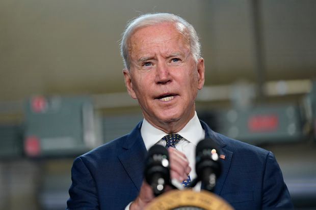 | |
| 2021-06-01 19:04:00 | Opinion | The Left’s Decriminalization Push Stops Short of Labor Law | One law professor says violations by employers should carry ‘the real threat of imprisonment.’ | ||
| 2021-06-01 19:02:00 | Opinion | Should Biden Have Forgiven Student Debt? | Some think the president abandoned young voters; others think he made the right call. | Editor’s note: This week’s Future View asks whether President Biden should make student debt relief a priority. Next we’ll ask: What do you think of companies’ embrace of Pride Month? Students can click here to submit opinions of fewer than 250 words before June 15. The best responses will be published that night. A Good Way to Inflate Tuition Canceling student loan debt is a short-term solution that will only encourage universities to raise tuition. They won’t lose applicants over cost increases. Parents who can’t pay will expect the feds to step in. As a result, the next generation of students will be met with the same or worse debt problems, causing another student-loan cancellation initiative. According to the Federal Reserve Bank of New York, every dollar in subsidized loans results in a 60-cent increase in the sticker price of college tuition. To break this vicious circle, the government needs to lower tuition costs by getting out of the credit market for student loans and developing a more cost-effective way for all Americans, regardless of income, to attend college. The government could promote community colleges and trade schools over the traditional university experience, for example. Then the discussion can begin on how to deal with existing student debt. |
|
| 2021-06-01 19:01:00 | Opinion | Liberals Choose Racial Catharsis Over Progress for Blacks | What happened in Tulsa 100 years ago matters far less than what’s happening in Chicago today. | 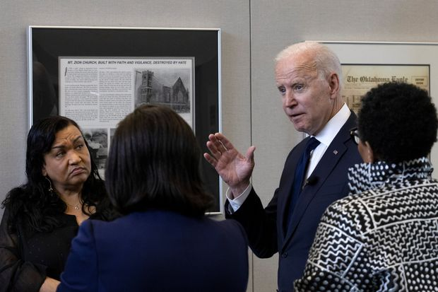 | |
| 2021-06-01 19:01:00 | Opinion | Notable & Quotable: Cake, Creativity and Conscience | ‘If you want to reject Jesus and purchase a cupcake, go ahead.’ | From “Why I Didn’t ‘Just Bake the Cake’ ” by Masterpiece Cakeshop proprietor Jack Phillips for First Things, May 28: Where do we think artistic creativity comes from? . . . It’s water from the fountain of our soul. . . That’s why I say that I’ll serve any person, but I won’t communicate all messages. Serving people is merely about recognizing each individual as a person worthy of respect, made in the image of God. I’m not trying to force any person to see the world the way I do, or to embrace my beliefs about God and the Bible. If you want to reject Jesus and purchase a cupcake, go ahead. I’ll gladly sell you that cupcake, and a cup of coffee to go with it, maybe even engage in a conversation about our differences. But asking me to draw on my creativity to communicate a message I believe is wrong? That’s asking me to stop being me. . . . To deny the deepest convictions of my heart, and pretend I haven’t learned the most difficult lessons of my life, or that they don’t matter. That’s not something any person has the right to ask of another. Or a command any government has the right to force one of its citizens to obey. |
|
| 2021-06-01 18:37:00 | World | Brazil’s Economy Bounces Back to Pre-Pandemic Levels While Covid-19 Still Rages | Latin America’s biggest economy grew 1.2% in the first quarter, propelled by agricultural exports | Brazil’s economy has returned to pre-pandemic levels, lifted by the biggest stimulus in emerging markets and a return to normal activity by many Brazilians who have ignored scientists’ calls to remain in lockdown as Covid-19 rages across the country. In data released Tuesday, the economy grew 1.2% from the fourth quarter, boosted by agricultural exports, taking Latin America’s biggest economy back to its size at the end of 2019 before the beginning of the pandemic. Economists had forecast growth of less than 1%. “People were up and about, generating GDP, but at a cost to public health, as we saw from the Covid numbers,” said Alberto Ramos, an economist at Goldman Sachs. But much of the growth came from pent-up demand during the pandemic, he said, adding that the country is still struggling to diversify its economy away from commodities. “We have to grow the hard way, which is through investment and productivity growth, and that’s a challenge for Brazil,” Mr. Ramos said. As Brazilians fill shopping malls and bars, about 77 people are still dying from Covid-19 every hour in the country. More than 460,000 Brazilians have died from the disease so far. |
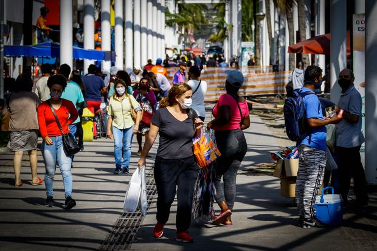 |
| 2021-06-01 18:34:00 | Opinion | All the WHO’s Dictators | Taiwan is excluded while Syria and Belarus get leadership positions. | President Biden rejoined the World Health Organization as one of his first official acts, and his Administration has vowed to “strengthen and reform” it. That effort isn’t going well, as last week’s World Health Assembly shows. The annual WHO confab started badly as China succeeded in blocking Taiwan’s participation—and embarrassing the U.S. in the process. The island democracy, which hoped to participate as an observer, has one of the world’s best records combatting Covid-19 and could spread its lessons to the world. Secretary of State Antony Blinkensaid last month that there is “no reasonable justification for Taiwan’s continued exclusion from this forum,” and the G-7 nations supported its participation. But China, which tries to block Taiwan from all international institutions, prevailed over the Western democracies. Then on Friday the World Health Assembly voted to appoint Syria and Belarus to WHO’s executive board, which sets the governing body’s agenda and implements its policies. Video of the vote shows it proceeding with neither debate nor objections. These board seats reward Syrian President Bashar Assad, whose regime has slaughtered its own people and bombed hospitals; and Belarus dictator Alexander Lukashenko, who hijacked a passenger aircraft last month to arrest a critic. Syria will be represented by Minister of Health Hassan Mohammad Al Ghabbash, who was sanctioned by the U.K. for sharing responsibility “for the Syrian regime’s violent repression against the civilian population.” |
|
| 2021-06-01 18:31:00 | Opinion | Iran’s Navy Heads to the Americas | A pair of warships may be on the way to assist Venezuela. | Reports that two Iranian frigates may be steaming into the Atlantic toward Venezuela ought to concentrate minds in the Biden Administration. So much for Iranian goodwill amid President Biden’s determination to rejoin the 2015 nuclear deal. The vessels’ destination isn’t clear, and they could still turn back. But when asked by reporters on Monday about U.S. monitoring of the frigates, an Iranian foreign ministry spokesman said “Iran has constant presence in international waters, is entitled to this right on the basis of international law, and can be present in international waters.” He added: “I warn that nobody should make a miscalculation. Those who live in glass houses must be cautious.” Iran’s navy isn’t the U.S. Sixth Fleet, but the entry of warships into Caribbean waters would be a notable provocation. If it sails into these waters without resistance, a precedent will be set for adversarial navies operating in the region. Don’t be surprised if Russia and China decide to join the party in the future. Iran is a long-time Cuban ally, and since Hugo Chávez turned Venezuela into a dictatorship 20 years ago, Tehran has nurtured an ever-closer relationship with Caracas. The two regimes have engaged in joint defense ventures in the Venezuelan state of Aragua, and Venezuela is known to supply fake identities to Iranian operatives to move around the region. Venezuela’s point man for Iran is Tareck El Aissami, now oil minister. Iran is an essential energy supplier for the South American basket case, where domestic gasoline production has collapsed amid a shortage of resources, maintenance failures and corruption. |
|
| 2021-06-01 18:31:00 | Politics | National Enquirer Parent, Ex-CEO Fined for Breaking Election Law in 2016 Campaign | FEC cites hush payment to ex-Playboy model Karen McDougal, who said she had an affair with Donald Trump | The publisher of the National Enquirer agreed to pay $187,500 as part of a settlement with the Federal Election Commission over a 2016 scheme to buy and suppress the story of a woman who alleged an affair with former President Donald Trump. The May 17 agreement between A360 Media LLC and the FEC characterized the $150,000 payment to model Karen McDougal as an illegal corporate campaign contribution. Federal law prohibits companies from making contributions to candidate committees. A spokesman for A360 Media and David Pecker, the former chief executive of American Media Inc., didn’t have an immediate comment. The agreement came nearly three years after American Media, the predecessor of A360 Media, admitted as part of an agreement with federal prosecutors that it paid Ms. McDougal “in cooperation, consultation, and concert with” one or more members of Mr. Trump’s 2016 presidential campaign. Mr. Pecker, then-CEO of American Media, told prosecutors in 2018 that he took Ms. McDougal’s story off the market at the behest of Mr. Trump, The Wall Street Journal previously reported. Mr. Pecker stepped down as CEO of American Media when it merged with Accelerate 360 LLC, a Georgia-based logistics and distribution business, last year. |
|
| 2021-06-01 18:23:00 | Opinion | Vaccine Slowdown Isn’t Cause for Alarm | The vulnerable elderly got the shots first. Of course demand has been declining. | ||
| 2021-06-01 18:22:00 | Books | ‘Letter to a Young Female Physician’ Review: Chicken Soup for Doctors | ‘Dear young colleague,’ Dr. Koven writes, ‘you are not a fraud. Your training will serve you well. Your humanity will serve your patients even better.’ | ||
| 2021-06-01 18:22:00 | Opinion | The Climate Yawns at Exxon ‘Coup’ | An activist fund wants an oil giant to stop producing oil—except if it’s profitable. | ||
| 2021-06-01 18:20:00 | Risk & Compliance Journal | Senate Passes Bill to Fund CFTC Whistleblower Program | The bill was passed unanimously on Friday; a similar bill may be considered by the House of Representatives | 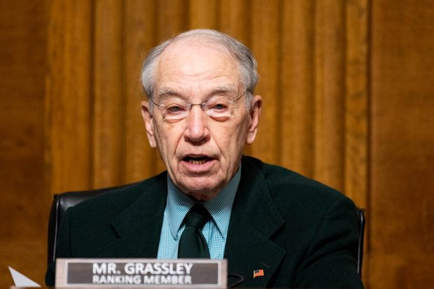 | |
| 2021-06-01 17:52:00 | Business | Meat Producer JBS Curtails Operations After Cyberattack | Major meat-processing plants in U.S. are affected, raising pressure on supplies | Meatpacker JBS SA was hit by a ransomware attack that took a big chunk of U.S. beef-and-pork processing offline, sending buyers scrambling for alternatives and raising pressure on meat supplies. Brazil-based JBS, the world’s biggest meat company by sales, told the Biden administration that it was the victim of a ransomware attack, White House principal deputy press secretary Karine Jean-Pierre said on Tuesday. She said JBS reported that the attack originated from a criminal group likely based in Russia. “The White House is engaging directly with the Russian government on this matter and delivering the message that responsible states do not harbor ransomware criminals,” Ms. Jean-Pierre said. JBS had no immediate comment on the White House’s description of the attack. The attack against JBS is the latest in a growing number to hit a range of businesses and institutions, including hospitals, the oil industry and local water supplies. |
|
| 2021-06-01 17:51:00 | Tech | Tesla Failed to Oversee Elon Musk’s Tweets, SEC Argued in Letters | SEC said Musk flouted court-ordered Policy in 2019 and 2020, records show | WASHINGTON—Securities regulators told Tesla Inc. last year that Chief Executive Elon Musk’s use of Twitter had twice violated a court-ordered policy requiring his tweets to be preapproved by company lawyers, according to records obtained by The Wall Street Journal. Tesla and the Securities and Exchange Commission settled an enforcement action in 2018 alleging that Mr. Musk had committed fraud by tweeting about a potential buyout of his company. Mr. Musk paid $20 million to settle that case—Tesla also paid $20 million—and agreed to have his public statements on social media overseen by Tesla lawyers. In correspondence sent to Tesla in 2019 and 2020, the SEC said tweets Mr. Musk wrote about Tesla’s solar roof production volumes and its stock price hadn’t undergone the required preapproval by Tesla’s lawyers. The communications, which haven’t been previously reported, spotlight the running tension between the nation’s top corporate regulator and Mr. Musk, who publicly mocked the SEC even after settling fraud claims with the agency. The SEC told Tesla in May 2020 that the company had failed “to enforce these procedures and controls despite repeated violations by Mr. Musk.” The letter, signed by Steven Buchholz, a senior SEC official in its San Francisco office, added: “Tesla has abdicated the duties required of it by the court’s order.” Tesla, Mr. Musk, and the SEC didn’t respond to requests for comment. |
|
| 2021-06-01 17:40:00 | Television Review | ‘Woman in Motion’ Review: Nichelle Nichols’s Real-Life Mission | In Todd Thompson’s documentary, the actress best known for her groundbreaking role as Lieutenant Uhura on ‘Star Trek’ reflects on her efforts to diversify NASA’s workforce. | ||
| 2021-06-01 17:39:00 | U.S. | Biden to Meet Tulsa Massacre Survivors, Discuss Racial Wealth Gap | President will deliver remarks in business district where, 100 years ago, white mobs killed Black residents and destroyed roughly 35 city blocks | President Biden is expected to detail steps his administration will take aimed at narrowing the racial wealth gap, as he meets Tuesday with survivors of the 1921 Tulsa Race Massacre in Oklahoma and participates in events marking the centennial of the tragedy. The president will make the remarks at the Greenwood Cultural Center, located in the business district once known as Black Wall Street, where 100 years ago white mobs killed as many as 300 Black residents and destroyed the district’s roughly 35 city blocks. Mr. Biden issued a “Day of Remembrance” proclamation on Monday, committing to honor the legacy of the Greenwood community. The White House said Mr. Biden will meet privately with three survivors who were children at the time of the massacre: Viola Fletcher, Hughes Van Ellis and Lessie Benningfield Randle. The new measures that Mr. Biden will describe, according to the White House, include increasing the share of federal contracts going to certain small, mostly minority- or women-owned businesses by 50% by 2026, which administration officials say would mean $100 billion more for such businesses. The Democratic administration is also expected to propose reversing steps taken by the Republican Trump administration to soften or revoke Obama-era regulations that cracked down on discrimination in housing. Housing and Urban Development Secretary Marcia Fudge also will be charged with a new initiative that would seek to root out what the White House described as racial discrimination in the appraisal and home-buying process. |
|
| 2021-06-01 17:24:00 | U.S. | Editor of Medical Journal JAMA to Step Down Amid Controversy Over Racism | Howard Bauchner apologizes for JAMA podcast, tweet questioning existence of racism in medicine | The editor in chief of the Journal of the American Medical Association, one of the country’s pre-eminent medical research journals, is stepping down after the publication produced a podcast episode and a tweet that questioned the existence of racism in medicine. Howard Bauchner, a pediatrician at Boston University School of Medicine who has edited the journal since 2011, was placed on leave in March and the journal’s publisher, the American Medical Association, said the incident was being reviewed. On Feb. 24, JAMA’s official Twitter account posted a message that read in part, “No physician is racist, so how can there be structural racism in health care?” The message urged readers to listen to an episode of a JAMA podcast hosted by Edward Livingston, a top editor at the journal, in which, according to several news reports, he said, “Many people like myself are offended by the implication that we are somehow racist.” The podcast episode and the tweet have since been deleted. In place of the podcast on the JAMA website is a recording of Dr. Bauchner apologizing for the discussion. “Comments made in the podcast were inaccurate, offensive, and hurtful, and inconsistent with the standards of JAMA,” Dr. Bauchner said Tuesday. “Racism and structural racism exist in the United States, and in healthcare.” |
|
| 2021-06-01 17:15:00 | Opinion | Flying the Politically Correct Skies | American Airlines and Delta may want to reconsider their international route maps. | ||
| 2021-06-01 17:10:00 | Markets | AMC Shares Soar After Company Raises $230 Million in Stock Sale | The movie-theater chain’s stock continues a rally after selling 8.5 million shares to hedge fund Mudrick Capital | ||
| 2021-06-01 16:53:00 | Life & Arts | Naomi Osaka, Reluctant Stars, and the Sports World’s Mental Health Challenge | The No.-2-ranked tennis player’s exit from the French Open has reignited a conversation around mental health that is reshaping professional sports | ||
| 2021-06-01 16:51:00 | Television Review | ‘Ballerina Boys’ Review: The Comedy Kings Who Have Played Swan Queens | A PBS documentary tells the story of Les Ballets Trockadero de Monte Carlo, an all-male troupe that has poked fun at classical dance and gender norms by performing en pointe and in drag for 45 years. | ||
| 2021-06-01 16:49:00 | World | Netanyahu Supporters Woo Israeli Right-Wing Lawmakers to Undercut Rival Coalition | Allies of Prime Minister Benjamin Netanyahu and his Likud party are trying to convince other politicians to stay with the longtime leader | TEL AVIV—As his rivals team up to drive him from power, Israeli Prime Minister Benjamin Netanyahu is making a last-ditch attempt to convince some right-wing lawmakers to abandon the prospective coalition. Mr. Netanyahu’s supporters, including Likud lawmakers close to him, have made calls and sent text messages in recent days to many of these lawmakers, according to people familiar with the matter. Three right-wing parties—New Hope, Yamina and Yisrael Beiteinu—have said they would join the new coalition. It is “an absolute all-out onslaught of pressure,” one of the people said. Sharpen Haskel, one of several lawmakers who left Mr. Netanyahu’s Likud party last year to join the New Hope party, said Tuesday she had “many approaches from Likud members and supporters” to defect. But she said she didn’t intend to. A Likud spokesman said “we are making every effort” to prevent the establishment of the rival coalition’s government. |
|
| 2021-06-01 16:46:00 | Politics | Biden Administration to Suspend Oil Leases in Arctic Refuge | Leases were approved in the waning days of the Trump administration | WASHINGTON—The Biden administration suspended oil leases in the Arctic National Wildlife Refuge in Alaska, the latest move in its effort to block plans to begin the first-ever drilling program in the pristine 19-million-acre wilderness. The Interior Department said on Tuesday the program will be on hold until it completes a “comprehensive analysis” under the National Environmental Policy Act. A review, ordered by President Biden on his first day in office, identified what it said were defects in the Trump administration’s final decision to approve new oil leases in the refuge, according to the Interior Department, which added a more thorough analysis could lead to the leases being voided altogether. The department said the approval didn’t properly analyze “a reasonable range” of alternatives for allowing and managing oil development while mitigating environmental harm. The refuge—a remote corner of northeast Alaska that is about the size of South Carolina—is home to polar bears and caribou herds. It has been off limits to drillers, miners and other developers for decades. Mr. Biden has sided with environmentalists who say the area should remain pristine, protected wilderness. |
|
| 2021-06-01 16:40:00 | Tech | Zoom Reports Customer Growth in Latest Quarter, Raises Expectation | The number of customers with more than 10 employees reached about 497,000 in the latest period | ||
| 2021-06-01 16:26:00 | World | WHO Seeks More Funding for Covid-19 Vaccines, Endorses Sinovac’s Shot | Moves are part of a push to get more people vaccinated in the developing world | GENEVA—The World Health Organization called Tuesday for $50 billion in funding from wealthy nations to buy vaccine doses for developing countries, saying that “countless lives” and trillions of dollars in economic activity hang in the balance. The WHO also endorsed a second Chinese vaccine against Covid-19, CoronaVac, a shot by private pharmaceutical firm Sinovac BioTech Ltd. for emergency use. The decision paves the way for a WHO-backed Covax vaccine pool to distribute doses. The moves are part of a renewed push by the United Nations to get more vaccines to the developing world to bring global contagion under control. They came a day after the agency ended an annual meeting with some of its other efforts—such as research into the origins of the disease or a new treaty to stop future pandemics—snagged by disagreements between the U.S. and China. Joined by leaders of the World Bank, the World Trade Organization and the International Monetary Fund, WHO’s Director-General Tedros Adhanom Ghebreyesus asked that wealthy countries donate $50 billion that he said would be enough to have 60% of the world-wide population covered within the next year. That, leaders of the four institutions said, would allow $9 trillion in new economic growth by 2025. “It is now crucial to get these lifesaving tools to the people who need them quickly,” Dr. Tedros told reporters. “We have the means to end this pandemic quickly and save countless lives and livelihoods, but we need the will to make it happen.” |
|
| 2021-06-01 16:18:00 | Opinion | Common Good and Distributism’s Dark Side | These ideas are a romantic path to socialism. All economic assets, like land, labor, capital, metals, water, etc., are scarce by definition. Who in this romantic world will decide what, how, to whom, and from whom to take what is being distributed? | 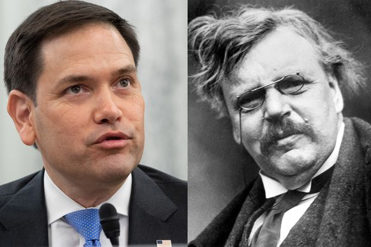 | |
| 2021-06-01 16:16:00 | Opinion | Cryptocurrency Ban: Unworkable and Unwise | While it is unfortunate that Mr. Reiners’ proposed ban mimics the Chinese approach, it is also technically impossible. | Regarding Lee Reiners’s “Ban Cryptocurrency to Fight Ransomware” (op-ed, May 26): Emulating the Chinese government’s approach to cryptocurrencies is misguided, impractical and un-American. As Mr. Reiners concedes, “banning anything runs counter to the American ethos,” a statement that encapsulates the open approach to new technology that we, as a country, have often pursued. While it is unfortunate that Mr. Reiners’s proposed ban mimics the Chinese approach, it is also technically impossible. Open blockchain networks run on open-source software, meaning the government couldn’t enforce a ban on digital assets without shutting down the entire internet. We doubt such a solution would have much of a durable constituency on Capitol Hill or in the White House. Indeed, what sort of signal would banning this censorship-resistant financial system send to the billions of people living under authoritarian regimes? One timely example undermines Mr. Reiners’s assertion that cryptocurrencies are used only by speculators and criminals. According to the Human Rights Foundation, Belarusians have used bitcoin to defy Alexander Lukashenko’s regime by sending more than $3 million in unstoppable money directly to striking workers, who then convert it to local currency in peer-to-peer marketplaces, helping to support protests against the country’s dictatorship. Another more local example shouldn’t escape our view: Mr. Reiners’s Global Financial Markets Center openly solicited, until May 26, donations in several cryptocurrencies. If a well-regarded think tank focused on the future of the world’s financial systems deems crypto donations worthy, perhaps Mr. Reiners should look closer to home for worthwhile use cases. Kristin Smith Executive Director |
|
| 2021-06-01 16:13:00 | Opinion | Was that a Parody by James Carville on Crime and Democrats? | Where has crime exploded in the past 18 months? In 2020, homicides were up 74% in Seattle; 56% in Chicago; 45% in New York City, which also saw a 97% increase in shootings. |  |
|
| 2021-06-01 15:43:00 | Life & Arts | 5 Fabulous Hotel Pools With Day Passes | How to have a real vacation in a single afternoon? Purchase day-pass access to one of these hotel pools, from Nashville to Beverly Hills. | ||
| 2021-06-01 15:22:00 | U.S. | Supreme Court Says Tribal Police Can Search Non-Indians on Reservations | Justices’ unanimous ruling further affirms limited sovereignty for indigenous nations | WASHINGTON—The Supreme Court ruled unanimously Tuesday that tribal police officers with sufficient cause can stop and search non-Indians traversing reservations, the latest in several recent decisions that in ways large and small have affirmed limited sovereignty for Native American nations. Indian tribes have jurisdiction over Indians for crimes committed on reservations, but non-Indians typically fall under the authority of federal or state authorities. Reasoning that a non-Indian’s 2016 drug arrest in Montana stemmed from a tribal officer’s investigation, federal trial and appellate courts threw out the conviction. Tuesday’s decision, however, found that tribes hold basic authority on reservations to safeguard the welfare of their members, including the legal power to make safety checks on suspicious cars stopped along the public right-of-way. Tribes “lack inherent sovereign power to exercise criminal jurisdiction over non-Indians,” Justice Stephen Breyer wrote for the court, or even to “regulate hunting and fishing by non-Indians on land that non-Indians own” on a reservation. Congress holds the ultimate power over tribal authority, the court has held. But in decisions tracing to the republic’s early years, the Supreme Court has on occasion recognized the dependent sovereignty the tribes retained. Justice Breyer recalled an 1832 opinion by Chief Justice John Marshall affirming Cherokee prerogatives against encroachment from the state of Georgia. |
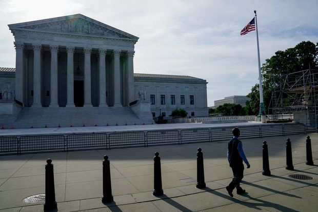 |
| 2021-06-01 14:58:00 | Business | ‘Warner Bros. Discovery’ Will Be Name of Media Colossus Formed in Merger | Discovery CEO David Zaslav, who will run company created by deal to acquire AT&T’s media assets, announces name during town hall meeting with staffers | The merger of AT&T Inc.’s WarnerMedia unit with Discovery Inc. won’t be completed until next year, but the new company already has a name: Warner Bros. Discovery. Discovery Chief Executive Officer David Zaslav announced the name during a town hall meeting Tuesday with WarnerMedia CEO Jason Kilar. Mr. Zaslav, who will lead Warner Bros. Discovery, added that the name is meant to evoke the company’s focus on storytelling, exemplified by the nearly century-old Warner Bros. studio. Also during the town hall, Mr. Zaslav said the new company’s tagline will be “The Stuff That Dreams Are Made Of,” a reference to the classic 1941 noir film “The Maltese Falcon” starring Humphrey Bogart and distributed by the Warner Bros. film studio. During one scene in the movie Mr. Bogart’s character, Sam Spade, refers to the titular Maltese Falcon statuette as “the stuff that dreams are made of,” a line that riffs on a similar one in Shakespeare’s “The Tempest.” Mr. Zaslav said during the meeting that the company’s new name and tagline are intended to emphasize its heritage as a content company. Under AT&T’s leadership, WarnerMedia has sometimes faced internal division over the relationship between its business goals and its creative culture, The Wall Street Journal has reported. Tuesday’s meeting was the first time the two executives made a joint appearance since Discovery and AT&T announced the deal in May. Mr. Kilar wasn’t involved in early-stage negotiations between AT&T and Discovery, leading to speculation that he might not have a substantial role during the two companies’ integration. But last week, Mr. Kilar told employees that he would stay until the merger is completed. |
|
| 2021-06-01 14:51:00 | Politics | Foreign Governments Request Covid-19 Vaccine Doses as U.S. Prepares to Share | Countries such as Pakistan, Afghanistan, Bangladesh and Sri Lanka have asked for help in slowing the spread of the coronavirus | Countries such as Pakistan, Afghanistan, Bangladesh and Sri Lanka have petitioned the U.S. for Covid-19 vaccines as the Biden administration prepares to share 80 million doses, which foreign governments say they need to slow the spread of the coronavirus. Dozens of countries have sought a chunk of the doses the U.S. plans to donate overseas by the end of June, a senior administration official said. “What the U.S. has is a gold mine,” Ravinatha Aryasinha, Sri Lanka’s ambassador to the U.S., said in an interview. The administration said it planned to share 60 million doses of the AstraZeneca PLC vaccine, following a safety review by the Food and Drug Administration, and 20 million doses from the vaccines from Moderna Inc., Pfizer Inc. and Johnson & Johnson , whose shots are being given to people in the U.S. The Biden administration has faced growing pressure to share vaccine doses with developing countries amid outbreaks in India and Brazil. Mr. Biden said the U.S. would be a world leader in global vaccination efforts and characterized the 80 million doses as a first step. |
|
| 2021-06-01 14:33:00 | Opinion | Europe Catches the Inflation Bug | The ECB will try to emulate the Fed’s emergency patience. | 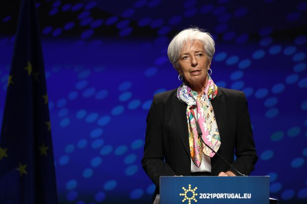 | |
| 2021-06-01 14:12:00 | Real Estate | NBA All-Stars Invest in $1 Billion Harvard Real-Estate Development | Players from L.A. Lakers and Milwaukee Bucks among Blacks and Latinos funding Boston project | Four NBA All-Stars are helping fund a new Harvard University real-estate development, joining more than 150 Black and Latino professionals in backing the roughly $1 billion project. Kyle Lowry of the Toronto Raptors, Andre Iguodala of the Miami Heat, Jrue Holiday of the Milwaukee Bucks and Andre Drummond of the Los Angeles Lakers are part of an investment group putting $30 million into the Boston development. That group also includes Black and Latino lawyers, doctors, tech workers and real-estate professionals. After developer Tishman Speyer submitted a proposal to build the project, Harvard asked the New York firm if it would commit to selling 5% of the development to Black and Latino people. Tishman agreed, said Chief Executive Rob Speyer. The first phase of the new development, which is currently seeking city and state approval, would span around 900,000 square feet and feature lab space, offices, retail, apartments and a hotel. Tishman Speyer is building the project on land that it will lease from Harvard University’s Allston Land Company for 95 years. |
|
| 2021-06-01 13:28:00 | Commodities | OPEC, Russia-Led Producers Agree to Pump More Oil | OPEC+ group agrees to planned output increase of about 450,000 barrels a day | ||
| 2021-06-01 13:25:00 | Markets | Manufacturing Surges, but Shortages May Persist | Manufacturers know that shortages can become supply gluts as production surges, but for now demand appears insatiable | ||
| 2021-06-01 13:15:00 | Markets | Jim Justice Confirms Personal Liability on Greensill Loans | West Virginia governor comments for first time about difficulties his family businesses face from loans arranged by now-defunct firm | 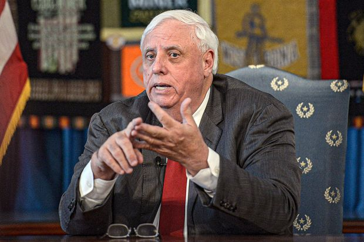 | |
| 2021-06-01 13:00:00 | Business | What Entrepreneurs Want From the SBA | Here’s a wish list of things small businesses want from the Biden administration | With millions of small companies reeling from the pandemic, owners and advocates hope the Small Business Administration under President Biden will offer more solutions to their troubles. But what is it small businesses actually want from the SBA? In the short term, advocates say, more needs to be done to protect and rebuild businesses devastated by Covid-19, such as loosening standards to obtain loans and making it easier to get access to advice and information. Long term, some advocates say, systemic changes are needed to strengthen the small-business community and better serve groups of entrepreneurs who aren’t getting the help they need right now. After Covid recedes as a threat, “more attention can be paid to the inadequacies exposed by Covid that are ripe to be fixed,” says Scott Gerber, CEO of the Community Company, which builds and manages professional associations for C-suite and senior-level executives. Strategies might include expanding the agency’s outreach efforts to smaller, newer businesses, as well as giving more support to businesses in minority, rural and disenfranchised communities, says Mr. Gerber. |
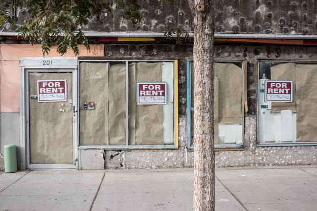 |
| 2021-06-01 12:59:00 | Opinion | Has Biden Lost His Nerve With Putin? | With another summit in the works, there’s little to suggest any improvement over Trump’s feeble policy. | ||
| 2021-06-01 12:59:00 | Opinion | Biden’s Slow-Growth Budget Gamble | The document predicts the economy stays stuck at 2% GDP growth for years. How come? | President Biden’s proposed budget would represent a sea change in American fiscal policy. If enacted, outlays over the next decade would increase by about $8 trillion and revenues by $6 trillion, bringing the deficit to $14.5 trillion from $12.3 trillion projected under current policy. The share of the economy flowing to the federal government would rise to about one-quarter, up from one-fifth, and the budget deficit would average about 5% of gross domestic product. By 2031 national debt held by the public would stand at $39 trillion, a record 117% of GDP. Despite soaring spending and debt, the Biden administration predicts that interest rates and inflation won’t increase more than current projections. This forecast may be rosy to the point of implausibility. Is it believable that a decade of Mr. Biden’s fiscal policies will leave the interest rate on 10-year Treasury notes at a mere 2.8%, compared with the Congressional Budget Office’s baseline forecast of 3.4%? The administration is betting the farm on its theory of the case. If the latest inflationary surge lasts longer than Mr. Biden’s economists (and the Federal Reserve) predict, monetary policy would have to tighten, threatening to slow economic growth. If inflation rises, so would interest payments on the rapidly expanding federal debt, forcing tough fiscal choices. But commentators have mostly overlooked the biggest surprise, and core conundrum, of the president’s proposal: Despite trillions of dollars of additional expenditures—some of which are investments, others not—the projected rate of economic growth increases only modestly, and most of the bump comes in the early years before tapering off. During the next two years, Mr. Biden’s spending surge would help return the economy to full employment faster than staying at the status quo. This is a good thing. But between the beginning of fiscal 2024 and the end of fiscal 2031, the administration’s projections show GDP rising by $8.9 trillion, barely distinguishable from the $8.8 trillion in CBO’s baseline. |
|
| 2021-06-01 12:00:00 | Business | How to Get More Women Into Technology | A number of programs have tried to steer women into STEM fields. Here are some that are working. | During her decadeslong career in technology, Judith Spitz watched as the “dismal number” of women in the industry failed to budge. In 2016, she decided to do something about it. That year, Dr. Spitz founded Break Through Tech at Cornell Tech in New York City, an initiative aimed at increasing the number of women in computer science and tech careers. By using a mix of methods—including setting up internship arrangements that better suited the students’ strengths—the program saw strong results: Today, about 50% of its participants win summer internships, up from 5% at the start. Break Through Tech is one of several recent efforts that are making headway against a longstanding problem: boosting the small number of women in science, technology, engineering and mathematics, or STEM. These programs attack the problem in a number of different ways. They are giving students enrichment programs, setting them up with female mentors as role models, grounding their course work in real-world problems to keep it relevant—and sometimes, like Break Through Tech, mediating with potential employers. Beyond that, many of the programs are looking to change something even more fundamental—how girls are taught science and even how they view themselves. “Our education system is simply not set up to close the gender gap in tech,” says Tarika Barrett, chief executive officer of the training and advocacy group Girls Who Code. |
|
| 2021-06-01 11:47:00 | Tech | Huawei Targets Google’s Android Dominance with Harmony OS | Chinese tech giant launches own operating system to rival Android after U.S. sanctions; Samsung and Microsoft failed in similar challenges | HONG KONG—Huawei Technologies Co. on Wednesday launches its self-developed operating system for mobile phones, the company’s latest bid to break free of U.S. suppliers and an attempt to challenge Google’s dominance in smartphone software. The Chinese tech giant plans to launch its new operating system, known as Harmony OS, across a large number of its smartphones during an online-only event, as well as unveil smart devices that will also run the company’s latest homemade software. Huawei gadgets have been cut off from updating Google’s Android operating system since August, following a series of U.S. sanctions against the Shenzhen-based company. The ban also cost Huawei access to the U.S. company’s package of smartphone software known as Google Mobile Services, used widely across the industry. While Huawei’s own smartphone sales are in free fall after briefly topping the world a year ago, the company is targeting other handset vendors that they hope will adopt Harmony OS, posing a direct challenge to Google Android’s dominance of the market. Samsung Electronics Co., Xiaomi Corp. and the rest of the world’s top-selling phone makers besides Apple Inc. all use Google’s Android. Chinese sellers make up 57% of the global handset market, according to market-research firm Canalys and could be potential takers if Huawei’s Harmony OS develops into a worthy match. |
|
| 2021-06-01 11:34:00 | Markets | While the U.S. Worries About Inflation, Growth Elsewhere Faces Lasting Damage | Most of the world isn’t expected to catch up with pre-pandemic economic forecasts anytime soon. Demand is a likelier culprit than supply. | ||
| 2021-06-01 10:45:00 | Markets | Robinhood Adds New Board Members to Advance IPO Push | Appointments include former World Bank chief Robert Zoellick and its first female director, PricewaterhouseCoopers partner Paula Loop | ||
| 2021-06-01 09:56:00 | Life & Arts | The Pandemic Made Kids’ Eyesight Worse, Doctors Say | Eye doctors say they’re seeing more children with new or worsening vision problems. Increased screen time, they believe, bears part of the blame. | Many kids are emerging from the pandemic with vision problems, doctors say. A primary culprit, they believe, is increased screen time. Eye doctors say they are seeing more children—many of whom were in virtual school—with new and worsening prescriptions for myopia, or near-sightedness. Rates of myopia in children were already increasing globally before the pandemic, but some research suggests the past year has exacerbated the problem. Doctors also report more cases of digital eye strain in kids. A leading theory behind rising myopia rates posits that when children look at screens or books for prolonged periods, the eye adjusts to accommodate a close focus, which may change and elongate the shape of the eye, leading to myopia. Likewise, decreased outdoor time may increase and worsen myopia, as people tend to look farther away when they’re outside. Natural light and physical activity outside may also play a role. (Adults don’t tend to experience significant worsening of myopia because eye growth generally stabilizes after childhood.) “We know that focusing up close and not being outside has increased the rate of myopia,” says Julia A. Haller, the ophthalmologist-in-chief at Wills Eye Hospital in Philadelphia. “There’s been a huge impact from the pandemic,” she says. In a January study in the journal JAMA Ophthalmology, researchers in China looked at myopia rates in more than 120,000 homebound children during the pandemic and found the prevalence in children ages 6 to 8 increased up to three times compared with the previous five years. |
|
| 2021-06-01 09:49:00 | Business | Supreme Court Won't Consider Johnson & Johnson Challenge to Baby Powder Judgment | Plaintiffs allege talcum contained asbestos, caused cancer | Breaking News WASHINGTON—The Supreme Court on Tuesday declined to consider a Johnson & Johnson appeal that sought to challenge a $2.1 billion civil judgment awarded to 20 women who alleged the company’s talcum baby powder caused ovarian cancer. (More to come) |
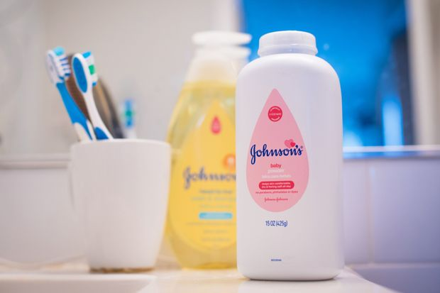 |
| 2021-06-01 09:00:00 | Politics | Biden Administration Supports Oil, Mining Projects Backed by Trump | Defense of ventures has helped Biden’s relationships with some Western lawmakers | WASHINGTON—Biden administration lawyers are defending oil and mining projects approved under the Trump administration, benefiting ConocoPhillips , Rio Tinto PLC, BHP Billiton Ltd. and others at the expense of environmental and tribal groups challenging the projects. In a series of court arguments this spring, the administration has supported the Willow oil project in Alaska, the Resolution Copper Mining project in Arizona and the Dakota Access Pipeline, all of which are on federal land or need federal approval for major water crossings. The legal filings have helped improve some of President Biden’s shakier relationships with lawmakers from Western states, specifically moderate Democrats and some Republicans from which Mr. Biden needs support to get his nominees and initiatives through Congress. “I sense there’s a lot more pragmatism there now,” said Sen. Steve Daines (R., Mont.), who has criticized the Biden administration’s pause on federal oil and gas leasing and its decision to kill the Keystone XL pipeline project. Mr. Daines applauded the administration’s recent federal court filing to defend ConocoPhillips’s Willow project against challenges from environmental groups. And he praised several recent nominations from Mr. Biden to fill out the leadership ranks at the Interior Department, including the former energy industry lawyer Tommy Beaudreau as deputy secretary. |
|
| 2021-06-01 08:52:00 | Tech | Elon Musk’s Starlink Could Get Boost From German Subsidies | Berlin is working on subsidy program for wireless broadband providers | BERLIN—Germany could become the first large nation to subsidize the use of consumer satellite internet services such as that offered by Elon Musk’s Starlink. The German government said it was considering paying grants of around 500 euros, equivalent to $610, per household to support purchasing the hardware required to access satellite broadband and other high-speed wireless internet services. Users would have to pay for usage. The program could pay out a total of €100 million, according to the government minister in charge of the project, and could launch within weeks. Broadband access in Germany is limited outside large cities—and sometimes within them—due to a low penetration of fiber-optic cables compared with other European countries. In international rankings, Germany often features behind less-developed nations. According to the Speedtest Global Index, Germany ranked 35th in April, behind Panama and Poland. Mr. Musk’s Starlink has emerged as an early market leader, offering high-speed internet services beamed from one of its nearly 1,500 satellites directly to users on Earth. Starlink is currently offering its service across swaths of Germany and says that it will achieve broad coverage by the end of 2021. |
|
| 2021-06-01 08:05:00 | Markets | Oil Rallies as OPEC Sees Demand Rebound While Supply Shrinks | OPEC and their allies are expected to relax production cuts as demand continues to improve, eroding the supply glut | The price of oil was on course Tuesday to close above $70 a barrel for the first time in two years on investors’ optimism that improving oil demand and a dwindling supply glut may mean the market can absorb any additional supply from OPEC and its allies. Brent crude, the international energy benchmark, rose 2.1% to $70.77 a barrel. It is on track for its highest close since May 2019. West Texas Intermediate futures gained 2.8% at $68.18 a barrel. The U.S. gauge on Tuesday crossed its highest level since October 2018. Prices are rallying after the Organization of the Petroleum Exporting Countries’s technical committee on Monday confirmed forecasts for a rebound of six million barrels a day in world oil demand this year, according to people familiar with OPEC and its allies. Ministers from those countries are scheduled to meet with non-cartel allies Tuesday to discuss plans to further relax ongoing production curbs during June and July. Vaccination programs are enabling governments across North America and Europe to reduce coronavirus restrictions and resume more normal economic activity. That will help pare global oil stocks—which at one point last year threatened to overwhelm the world’s ability to store them—to below their five-year average by the end of July for the 2015-19 period, the OPEC committee projected. In the U.S., oil and oil-product inventories have fallen more than expected in recent weeks. Investors and analysts also expect the group known as OPEC+, an alliance between members of OPEC and other top oil producers, to stick to plans to further relax production curbs that have been in place since prices collapsed last spring. |
|
| 2021-06-01 08:00:00 | Real Estate | No Grave Dancing for Sam Zell Now. He’s Paying Up for Hot Properties. | Storied real-estate investor is focusing on more mainstream deals, a strategy reflecting the dearth of distressed properties | Sam Zell, who made a fortune buying distressed commercial properties, isn’t finding many bargains these days. Instead, the storied real-estate investor is doing something he usually avoids: following the pack and spending big on something safer. His most notable real estate deal during the coronavirus pandemic period came last month, when one of his companies agreed to pay about $3.4 billion for Monmouth Real Estate Investment Corp. Far from a hobbled company in distress, Monmouth owns 120 industrial properties in 31 states. The sector is one of the most profitable because of high demand for fulfillment centers from e-commerce companies such as Amazon.com Inc. Mr. Zell also wasn’t able to drive as hard a bargain as he had in many previous distressed deals. The all-stock deal reached in May is valued at more than $18 a share, a near-record for Monmouth stock. He could conceivably have to pay even more, since Blackwells Capital, which made an $18-a-share all-cash bid late last year, said it is weighing options including a higher offer. Mr. Zell declined to comment. But the 79 year-old’s more conventional investment strategy is the latest sign that the pandemic hasn’t produced the distressed opportunities many investors expected. |
|
| 2021-06-01 08:00:00 | Real Estate | Goldman Sachs Backs Single-Family Rental Fund for Small Investors | Real-estate firm Fundrise is ramping up its home purchases | A startup that wants to open up the single-family home rental market to small investors is ramping up its home purchases, after winning the backing of Goldman Sachs Group Inc. Real-estate firm Fundrise manages a fund that enables customers to invest as little as $500 in homes going up in fast-growing cities such as Charlotte, N.C., Tampa, Fla., and San Antonio. With the dearth of homes for sale throughout the U.S. pushing up housing prices, single-family rentals have become an increasingly popular alternative to buying in desirable neighborhoods. Goldman Sachs last week provided a $300 million credit facility to Fundrise, the startup said. The deal comes as more financial firms court individual investors. Apps such as Robinhood have turned thousands of younger and less wealthy people into busy stock traders, leading to hopes that some of them could be drawn to real estate, too. Washington, D.C.-based Fundrise manages a so-called interval fund, in which individual investors can invest small sums without going through a broker, though they can only pull out their money at set intervals. The fund has raised around $200 million since its January launch, and has bought or signed contracts to buy around 2,500 homes, said Fundrise Chief Executive Ben Miller. |
|
| 2021-06-01 08:00:00 | CFO Journal | Less Is More, Retail CFOs Find as They Plot Post-Pandemic Strategy | Apparel chains look to lower their inventory, reduce rents and hold fewer promotions to concentrate on building profits | ||
| 2021-06-01 08:00:00 | Markets | SPAC Pullback Pressures Creators to Find Quality Mergers | Many SPAC teams are wooing startups to finish deals within two years | Competition among so-called blank-check companies to find mergers is already stiff. Share-price declines and a ticking clock to take companies public are ratcheting up the pressure. The new challenges for creators of special-purpose acquisition companies, or SPACs, result in part from the abundance of the deals that raised money early in 2021. Looming over these firms is a two-year deadline to do a deal or hand back cash to investors. Now that shares of many SPAC-related companies have fallen, fewer startups are interested in going public through a SPAC. That mismatch is intensifying competition between some blank-check firms for the same private firms, known by some on Wall Street as a “SPAC-off.” SPACs are shell companies that raise money and list on an exchange with the sole intent of merging with a private firm to take it public. The private company, often a startup, then gets the SPAC’s place in the stock market. Blank-check mergers let companies going public make future business projections—which aren’t allowed in regular IPOs—one reason they took Wall Street by storm this winter and have raised a record $105 billion this year, according to SPAC Research. But with SPAC shares in retreat, many blank-check firms now trade below their debut price. Many companies in recent months have said that several different SPACs have asked them about mergers, a trend that contributed to the frenzy in the sector. |
|
| 2021-06-01 08:00:00 | Life & Arts | It’s His Job to Stop LeBron. And Steph. And Luka. | Mikal Bridges, a skinny kid who once took a redshirt year because his body wasn’t ready for college basketball, now has an unlikely role for the Suns: guarding the other team’s best player. | Not long into his freshman year at Villanova University, Mikal Bridges realized something peculiar: He wasn’t ready for college basketball. He decided to redshirt. This was extraordinarily odd for someone with his future. The players who become lottery picks in the NBA draft are precocious talents who go to campus only because they’re not allowed in the pros. They’re not in need of an extra season to prepare their bodies to compete against other teenagers. That was six years ago. But the same player who wasn’t big enough, strong enough or physically capable enough for the college game now finds himself with an unlikely job for the Phoenix Suns in the NBA playoffs: Mikal Bridges is responsible for defending LeBron James. “It’s mind-blowing to me. It really is. That’s my baby out there guarding LeBron,” said Tyneeha Rivers, his mother. “He was this skinny kid—and now look at him.” The easiest way to spot Bridges during a Suns game is to search for the other team’s best player. The chances are there will be a spindly guy with arms like javelins right beside him. |
|
| 2021-06-01 07:59:00 | World | Vatican Revises Church Law in Wake of Sex Abuse, Financial Scandals | Updates to Catholic Church’s penal code also include laws against ordination of women, recording of confessions | ROME—The Vatican on Tuesday unveiled an updated version of the Catholic Church’s penal code to reflect scandals over clerical sex abuse and financial corruption that have shaken the church in recent years, expanding the types of offenses as well as potential culprits and victims. The new penal code broadens the categories of persons who can be punished for sex abuse to include laypeople and nuns, but doesn’t provide for the automatic defrocking of abusive priests as some campaigners have demanded. Though mostly a collection of legislation established by popes over the past three decades, it places greater emphasis than the previous code, published in 1983, on the obligation to enforce penalties, stating that bishops are required to take punitive action when warnings or other measures are inadequate to do justice or reform the guilty. In a decree instituting the revisions, Pope Francis wrote that charity and discipline are intimately related and that the proper remedy for immoral behavior “is not only exhortations or suggestions.” The revised code reclassifies the sexual abuse of minors by clergy among “crimes against the life, dignity and freedom of man,” rather than violations of the “special obligations” of clergy, as stated in the 1983 code. |
|
| 2021-06-01 07:48:00 | World | Hong Kong Plans Law to Tie Mobile-Phone Numbers to User’s Identity | City’s government moves to make people provide identities when buying SIM cards, a change critics say will infringe freedoms and privacy | HONG KONG—The government Tuesday unveiled plans to require people in Hong Kong to provide their real name and other personal details when registering mobile phone numbers, a move that critics said would further curtail people’s freedoms and stoke fears of surveillance. Officials said the change was necessary to aid investigations by law-enforcement agencies and would help tackle thefts by phone scammers preying on city residents, as well as drug trafficking and other organized crimes. It puts Hong Kong in line with about 155 countries including France, Germany and South Korea that have similar measures, officials have said. In the U.S., there is no federal law mandating people buying prepaid SIM cards to have their identities verified. The proposal has touched a nerve in the Chinese territory, however, where fears of surveillance run high amid a continuing crackdown on dissent. Activists and opposition politicians have had phone messages used by police as evidence against them for alleged violations of the national security law imposed in June. During antigovernment demonstrations that rocked the city in 2019, many protesters took steps to conceal their identities by using pseudonyms on messaging platforms and buying spare SIM cards for communication. Currently, while users who subscribe to SIM service plans from carriers do register their names, people can buy or top up prepaid SIM cards from convenience stores and other outlets without doing so. “The Hong Kong government continues to make policies that show they don’t trust their own citizens,” said Lokman Tsui, an assistant professor at the School of Journalism and Communication at the Chinese University of Hong Kong. He described the policy, which will see registrations begin next year, as a further erosion of privacy and trust in Hong Kong. |
|
| 2021-06-01 07:48:00 | Markets | KKR, CD&R Strike $5.3 Billion Deal to Buy Cloudera | Deal will take the software company private | Private-equity firms KKR & Co. and Clayton Dubilier & Rice LLC agreed to buy Cloudera Inc. for roughly $5.3 billion in a deal that would take the software company private. The pair on Tuesday said they would pay $16 a share for the data-cloud company, representing a roughly 24% premium to where the shares closed Friday. The Wall Street Journal reported Monday that the firms were close to a deal. Founded in 2008 by a group of engineers from Alphabet Inc.’s Google, Facebook Inc., Oracle Corp. and Yahoo Inc., Cloudera was an early player in the open-source software framework Hadoop, which enables large amounts of data to be processed quickly. But it struggled to shift to the now-dominant public cloud, where it faces steep competition from much larger firms including Amazon.com Inc.’s Amazon Web Services. Cloudera’s shares have had a rocky run since their public-market debut in 2017. They are trading below their initial public offering price and are down roughly 8% this year. |
 |
| 2021-06-01 07:32:00 | World | China Delivers Three-Child Policy, but It’s Too Late for Many | Beijing is letting married couples have three children, but demographers say it would have had a bigger impact before the one-child mind-set took hold | When Li Fanfang, a 33-year-old former government worker in Hangzhou, was fired by her employer in December for having a third child, she went to court. That was after an arbitrage board said she wasn’t covered by protections for new mothers because she had violated China’s birth policies. Her case was well publicized, but she was hesitant to use her full name in media interviews for fear of drawing online criticism for breaking the rules. All along, she didn’t feel she did anything wrong. Now, China’s demographics has put Beijing on her side. On Monday came the announcement that all Chinese couples will be allowed to have three children. “I’m very excited,” Ms. Li said. Births that Chinese authorities deem “excessive,” have exposed parents to fines and other punishments. Ms. Li, who is awaiting a court ruling, said she wants to see China become a birth-friendly society. “No baby is excessive.” In an online support group of mothers with more than two children, Ms. Li and other mothers shared virtual “red-envelope” gifts to celebrate the announcement Monday, which was accompanied by pledges to make raising children less expensive. |
|
| 2021-06-01 07:30:00 | Business | Business Travel Is Coming Back | How much business travel returns is an urgent question for airlines, which rely on it for a huge share of their revenue | Fresh signs are emerging that business travelers won’t be grounded much longer. Some companies that learned to do without travel during the coronavirus pandemic said they are ready to get back on the road instead of defaulting to virtual meetings and conferences, while others are trying to determine which business trips are still needed. Alison Taylor, chief customer officer at American Airlines Group Inc., said 47 of the airline’s 50 largest corporate accounts have said they plan to resume traveling this year. “They’re getting their office opened, feeling comfortable with that as the first steps, and then travel comes after that,” she said. Corporate trips remain 70% or more below pre-pandemic levels, according to airlines, which rely heavily on business travel for a huge share of their revenue. But carriers including American and United Airlines Holdings Inc. said the pace of business travel bookings has been picking up in recent weeks. |
|
| 2021-06-01 07:30:00 | Law | Amazon Faced 75,000 Arbitration Demands. Now It Says: Fine, Sue Us | The retail giant is no longer steering customers away from the court system, as companies scramble to find ways to avoid lawyers who file mass-arbitration claims | Companies have spent more than a decade forcing employees and customers to resolve disputes outside the traditional court system, using secretive arbitration proceedings that typically don’t allow plaintiffs to team up and extract big-money payments akin to a class action. Now, Amazon . com Inc. is bucking that trend. With no announcement, the company recently changed its terms of service to allow customers to file lawsuits. Already, it faces at least three proposed class actions, including one brought May 18 alleging the company’s Alexa-powered Echo devices recorded people without permission. The retail giant made the change after plaintiffs’ lawyers flooded Amazon with more than 75,000 individual arbitration demands on behalf of Echo users. That move triggered a bill for tens of millions of dollars in filing fees, according to lawyers involved, payable by Amazon under its own policies. Amazon’s decision to drop its arbitration requirement is the starkest example yet of how companies are responding to plaintiffs’ lawyers pushing the arbitration system to its limits. Arbitration agreements are buried in the contracts consumers sign to do everything from buying a cellphone to using a ride-hailing app. Many employers also require arbitration for adjudicating issues like pay disputes or discrimination claims. The U.S. Supreme Court has repeatedly upheld and strengthened the rights of companies to mandate arbitration. |
|
| 2021-06-01 07:00:00 | Politics | Trump Turned Nonvoters Into Voters in 2020. Will They Turn Out for Next Year’s Midterms? | The GOP drew voters who skipped prior elections, new data show, but lost some habitual voters | New data on the 2020 election show that then-President Donald Trump drew substantial support in some battleground states from Americans who had skipped prior elections, creating a new pool of voters whose decisions on whether to participate again will be central to next year’s midterms. These voters had cast ballots intermittently or sat out all prior elections, despite being old enough to vote, but were drawn off the sidelines by the Republican president’s race against his Democratic challenger, Joe Biden. New analyses by TargetSmart, a Democratic voter-data firm, and the Republican National Committee found that more of these “low-propensity voters” chose to register as Republicans than Democrats in several of the closest battlegrounds, including Pennsylvania, North Carolina and Florida. In Pennsylvania, for example, more than 600,000 voters who cast ballots in 2020 had been eligible to vote in prior general elections but never did, TargetSmart found. More of these newly engaged voters registered as Republicans than Democrats by about 6 percentage points, giving the GOP an edge of about 35,400 voters in a fiercely competitive state—though one which Mr. Biden won. The results present both good news and a challenge for the Republican Party. The data help explain how Mr. Trump won 11 million more votes in 2020 than in his first election and show that his campaign drew new supporters to the GOP, an effort that focused most intensely on reaching working-class and rural voters in Pennsylvania, Wisconsin and other battlegrounds. But the strategy came with a gamble. In engaging more working-class and rural Americans, Mr. Trump forfeited a measure of support from professional-class and suburban voters in the process, losing people who show up regularly for elections in favor of those with inconsistent voting records. That has left Republicans with an increased reliance on voters who likely need an extra push to turn out again, analysts in both parties say. |
|
| 2021-06-01 07:00:00 | Markets | In Travel, It Pays to Be a One-Trick Pony | Airbnb shows that travel’s only ‘super app’ these days is the smaller one | Two years ago, it seemed like Airbnb was bulking up to take on major global online travel agents such as Booking Holdings and Expedia Group . Then the pandemic hit, and it was forced to retrench. That might have been the better move all along. Booking has been focused on building something of a “super app” for a connected trip that brings all facets of travel into one place. Before the pandemic, it seemed like homestay giant Airbnb was headed in a similar direction. It bought premium homestay platform Luxury Retreats, invested in a print-only travel magazine, a joint venture with Hearst Magazines, later bought hotel booking site Hotels Tonight and hired its first head of transportation. But last May, much of that was put on the back burner as Chief Executive Officer Brian Chesky said the company was reducing its investment in activities that didn’t support the core of its host community, choosing to focus specifically on homeshare and experiences. It did this, according to Mr. Chesky, because it “could not afford everything” it once could. Paring down, it seems, has been the key to Airbnb’s business outperformance. At its bottom last year, Booking saw its gross travel bookings decline by more than 90% year on year, while Airbnb’s fell 67%. As of the first quarter, bookings for the online travel agent were still down more than 50% from the same period in 2019; Wall Street is estimating they won’t return to pre-pandemic levels until the fourth quarter of 2022. Airbnb, meanwhile, is already there. The company said bookings in the first quarter grew 3% from the same period of 2019. By the end of next year, analysts are forecasting that Airbnb will be enjoying year-over-year bookings growth of more than 47%. Its narrowed focus is a sustainable one. |
|
| 2021-06-01 07:00:00 | Private Equity Weighs Linking Manager Pay to ESG Performance | Challenges remain to basing compensation on environmental, social and governance impact | Private-equity investors are considering a novel strategy to make sure the firms they back are good corporate citizens: Tie their promises to their pay. More institutions are weighing whether to link asset managers’ compensation to performance on environmental, social and governance issues, say people who consult with investors and help private-equity firms raise money. These... |
||
| 2021-06-01 06:50:00 | Markets | Stock Futures Edge Higher Ahead of Manufacturing Data | Investors have grown more confident that rising inflation won’t lead central banks to unwind stimulus measures, pushing stocks toward all-time highs | U.S. stock futures ticked higher Tuesday, pointing to muted gains at the opening bell ahead of manufacturing data that will give fresh insights into the state of the economic recovery. Futures for the S&P 500 ticked up 0.4%, following a fourth consecutive monthly advance for the broad stocks gauge before the Memorial Day weekend on Friday. Contracts for the Dow Jones Industrial Average rose 0.5% and futures on the technology-focused Nasdaq-100 edged up 0.4%. Investors have grown more confident that rising inflation won’t lead central banks to unwind stimulus measures, pushing major indexes back toward all-time highs in recent weeks. Data showing a jump in U.S. inflation had prompted markets to stutter earlier in May. The S&P 500 closed Friday at its third-highest level in history. “The market is relatively sanguine about the inflationary pressure building,” said Brian O’Reilly, head of market strategy for Mediolanum International Funds. “It is still a liquidity-driven equity market that is brushing off any bit of bad news,” he added, pointing to President Biden’s $6 trillion budget plan as the potential catalyst for further gains. Valuations look high and stocks could pull back in the third quarter, Mr. O’Reilly said. But he doesn’t expect a severe selloff, and said technology is the only sector where he is concerned about prices being elevated compared with earnings. |
|
| 2021-06-01 06:30:00 | World | Chinese Factories Delay New Orders as Costs Rise, Risking Global Supply Shortages | Higher raw material prices and a lack of workers are forcing more manufacturers to slow production, stoking fears of inflation and a possible slowdown of the Chinese economy | HONG KONG—Buffeted by rising costs, some Chinese manufacturers are refusing to accept new orders or are even considering shutting down operations temporarily—moves that could put more strain on global supply chains and cause more inflation. Surging raw materials prices and a shortage of workers have pinched smaller Chinese manufacturers, including many that sell their products to the U.S. and other western markets. While many have passed their higher costs on to overseas buyers, the pain is so severe at some manufacturers that they are finding it hard to raise prices enough to make up the difference. Others don’t want to risk losing business to competitors. Many are now looking for other solutions to avoid losing money. Zhongshan Xiliwang Electrical Appliances Co., a kitchen ventilator producer based in southern China, told clients in mid-May that it would stop accepting new orders temporarily and urged customers to wait for two weeks before negotiating prices, given their volatility. The company has been operating at a loss since April, in part because of a substantial increase in prices for metals, glasses and switches, it said in its notice to buyers. Xing Jialiang, the owner of a glass factory in Zhongshan, says his firm is also running out of good options. It has raised prices by about 5% so far this year, but that hasn’t been enough to keep up with a 10% increase in costs, he said. Mr. Xing said costs were pushed higher in part because Chinese authorities shut down or limited production at some high-polluting plants, including those in glass manufacturing, which is energy-intensive and emits large amounts of carbon dioxide. China has vowed to achieve carbon neutrality by 2060. |
|
| 2021-06-01 05:30:00 | World | Covid-19 Prevention Measures Are Keeping Childhood Diseases Like Chickenpox at Bay | Washing hands and disinfecting remain valuable even after the pandemic fades, doctors say | The disinfecting and hand-washing that became common during the Covid-19 pandemic have also served as powerful tools against a host of childhood ailments such as chickenpox, stomach viruses and strep throat, recent data suggest. Doctors say that as countries with widespread Covid-19 vaccination, including the U.S., get back to normal, people would be well-advised to keep up some of the practices they have adopted—even if pandemic weariness makes them less than eager to take that advice. “We’ve seen a dramatic decline in the numbers,” said Rana El Feghaly, a pediatrician and director of clinical services at Children’s Mercy Hospital in Kansas City, Mo. “All the peaks that we expected in the winter of this year, we haven’t seen any of those.” The virtual disappearance of the flu has been well-documented, with cases down 99% or more in the U.S., Europe and other parts of the Northern Hemisphere over the winter. The U.S. recorded just one child death related to the flu in the 2020-21 season, down from 199 the previous year, according to the Centers for Disease Control and Prevention. What is less widely known—in part because the data are more scattered—is the long list of other viruses and bacteria that have found themselves shut out in the pandemic world. |
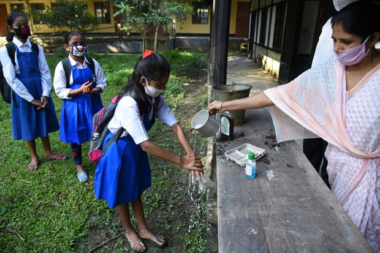 |
| 2021-06-01 05:30:00 | Markets | The Wall Street Players Who Worry Inflation Heralds Wild Markets | Investors bet that a coming surge of inflation will change 30 years of market behavior | Some investors are preparing for wild swings in financial markets, worried that inflation, and the Federal Reserve’s pledge to let it rise, will lead to a more volatile world. The reason: The economic policies aiming to create inflation now are the opposite of the ones that kept markets relatively stable for decades. Simplify Asset Management recently launched the Interest Rate Hedge ETF, which will seek to take advantage of what its backers see as a titanic shift in markets and is designed specifically to gain from rising longer-term Treasury yields. The ETF, run by Harley Bassman, a former Merrill Lynch trader who developed a widely followed measure of bond-market volatility known as the MOVE index, will put half its cash in long-term Treasurys and half in long-term options that gain if seven-year interest rates rise above 4.25%. That is high compared with current seven-year Treasury yields of about 1.25%. But at higher levels of rates, between 3.5% and 5%, stock and bond prices become more volatile and move in sync—so this ETF is meant to protect investors from that outcome too, Mr. Bassman said. |
|
| 2021-06-01 05:30:00 | Markets | Vaccine Makers Face Challenge in Sustaining Winning Streak | The companies likely will have to continue selling huge numbers of shots, or find other illnesses for their technology to tackle, investors say | Covid-19 vaccine-makers’ shares have soared since the beginning of 2020. Moderna Inc. is up about 850%, BioNTech SE has risen 510% and Novavax Inc. is up nearly 3,620%. Each of these companies has produced vaccines that have won regulatory authorization or are expected to win that backing. Some of the vaccine makers are racking up huge revenues. Their valuations assume more big gains, which depend on the next stages of the pandemic and whether the companies’ vaccine technology can be used to treat other diseases. Michael Yee, an analyst at Jefferies Group, expects Covid-19 vaccines to produce $20 billion of sales for Moderna this year and between $10 billion and $30 billion next year, for example. In May, the Cambridge, Mass.-based company said its Covid-19 vaccine was effective in children aged 12 to 17 in a new study. The Moderna shot would be the second for use in adolescents after the Pfizer -BioNTech vaccine. The big pharmaceutical companies that developed vaccines, such as Johnson & Johnson , Pfizer Inc. and AstraZeneca PLC, haven’t had the share-price gains like the smaller companies. Even successful vaccines won’t boost these companies’ huge revenues much. Some of the companies have also promised to limit profit during the pandemic, and AstraZeneca and Johnson & Johnson have struggled with production. Still the companies could benefit if long-term demand grows for their vaccines. The high valuations for the smaller stocks are giving some analysts pause. The companies likely will have to continue selling huge numbers of these shots, or find new pathogens and illnesses for their technology to tackle, to drive their stock prices higher, some investors and analysts say. Moderna has a market value of more than $75 billion, for example. Its high stock price is why Mr. Yee has a hold rating on the stock, even though he is bullish on the company’s prospects. |
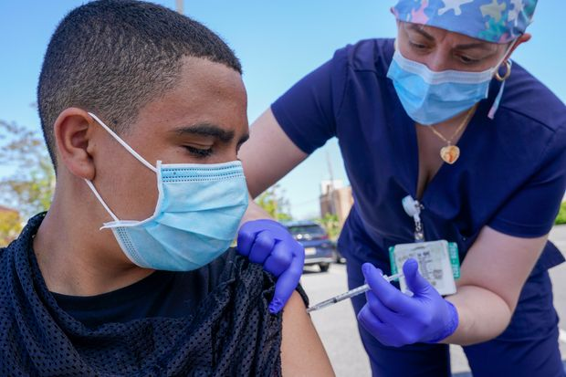 |
| 2021-06-01 02:06:00 | Life & Arts | Japan Faces Olympic Losses No Matter How It Handles the Games | Country has already lost out on foreign tourists’ spending, and opening to local spectators risks a costly Covid-19 surge | TOKYO—The first group of foreign athletes arrived for the Tokyo Olympics, raising the stakes for Japan’s prime minister as he comes under renewed pressure to seek a cancellation of the Games rather than risk a crippling new wave of the pandemic. Australia’s softball team landed in Japan on Tuesday and will spend the weeks up to the July 23 start of the Games isolated on three floors of a hotel north of Tokyo, heading out only for training and interacting with locals only via video calls. The arrival of athletes puts more pressure on Prime Minister Yoshihide Suga, who faces an array of medical, political and business leaders calling for the Games to be reconsidered while international Olympics officials say they intend to stick to the schedule. A new poll by the Nikkei newspaper showed that 62% of the public remain opposed to the Olympics going ahead as fears grow about the spread of Covid-19 variants, particularly the virulent strain first discovered in India. Most Japanese aren’t expected to be vaccinated when the Games start. Polling shows public opinion opposed to the Games in South Korea and some other nations, amid fears the event could accelerate the spread of infection outside Japan as athletes and officials return home from the event. Some doctors pulled out of the New Zealand Olympic team because of Covid-19 concerns. |
 |
| 2021-06-01 01:43:00 | Markets | Does China’s Baby Bust Mean a Global Inflation Boom? | The effects of China’s demographic crisis will percolate to nearly every corner of the global economy | China will allow couples to have three children and will invest more in education and child care, after decades of restricting most families to one or two children. The change is welcome, but the limited success of many other countries trying to boost births with financial incentives—and the lackluster response to a similar policy change in 2015—mean it is probably too late to head off the worst of China’s demographic crisis. The effects of the great Chinese baby bust will percolate to nearly every corner of the global economy. One of the biggest effects could be on something that is very much already on companies’ minds these days: inflation. Of course, a significantly smaller Chinese labor force wouldn’t necessarily mean higher prices for labor-intensive consumer goods. That would also depend on demand, levels of automation, transportation technologies and many other things. But all things being equal, it does seem likely that costs for labor-intensive manufacturing in aggregate could be set to rise significantly over the next decade or so, particularly if India continues to struggle with poor infrastructure and protectionism. Places like Vietnam will help, but the scale is several degrees of magnitude away. China’s Guangdong province alone is home to around 30% more people. One reason China’s integration into the world economy had such an enormous impact on the price of labor-intensive goods was that it timed its opening to the world nearly exactly right demographically. From 1990 to 2010, the percentage of the nation’s population ages 15 to 64, already reasonably high, skyrocketed nearly 10 percentage points to 75%. Not only was an enormous and cheap labor force suddenly available to multinational producers, but that labor force in aggregate had relatively few dependents to care for. Workers were more open to taking risks and chasing work opportunities far away in the big coastal cities. |
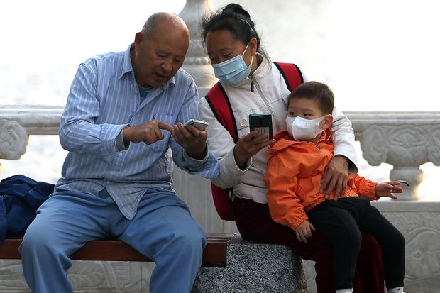 |
| 2021-05-31 21:21:00 | Deals | KKR, CD&R Near Deal to Buy Cloudera | Agreement to take software firm private could be finalized by Tuesday, sources say | Private-equity firms KKR & Co. and Clayton Dubilier & Rice LLC are nearing a deal to buy Cloudera Inc. and take the software company private, according to people familiar with the matter. A deal for the data-cloud company could be finalized by Tuesday, assuming the talks don’t fall apart at the last minute, the people said. The exact terms couldn’t be learned, but the company has a market value of nearly $4 billion. Founded in 2008 by a group of engineers from Alphabet Inc.’s Google, Facebook Oracle Corp. and Yahoo Inc., Cloudera was an early player in the open-source software framework Hadoop, which enables large amounts of data to be processed quickly. But it struggled to shift to the now-dominant public cloud, where it faces steep competition from much larger firms including Amazon.com Inc.’s Amazon Web Services. Cloudera’s shares have had a rocky run since their public-market debut in 2017. They are trading below their initial public offering price and are down roughly 8% so far this year after closing Friday at $12.86. Still, recent results have shown improvement in the company’s business. Cloudera in March reported revenue of $869 million for its fiscal year ended Jan. 31, an increase of 9%, and an operating margin of 17% compared with a negative one a year earlier. It is scheduled to report first-quarter results this week. |
 |
| 2021-05-31 17:16:00 | World | Iran Nuclear-Fuel Production Plummets After Natanz Explosion | New report gives first concrete insight into impact of alleged sabotage in April at nation’s main nuclear facility | Iran’s production of nuclear fuel plunged in recent weeks, the United Nations atomic agency reported on Monday, following alleged sabotage of its main nuclear facility in April that Tehran has blamed on Israel. The drop in production, detailed in the International Atomic Energy Agency’s confidential report circulated Monday, gives the first substantive insight into the impact of the incident, which took out the power supply at Natanz and destroyed potentially hundreds of centrifuges, machines that enrich uranium. Israel has declined to comment on the incident, one of several at Iran’s nuclear facilities over the last 18 months. Tehran accused Israel at the time of orchestrating the attack to undermine the start of talks in Vienna involving Iran and the U.S. aimed at restoring the 2015 nuclear deal. Former President Donald Trump withdrew the U.S. from the deal in 2018. Iran’s stockpile of enriched uranium increased by an estimated 273 kilograms in the three months ending May 22, the IAEA said, just over half the 525 kg stockpile increase in the previous quarter. The Natanz incident happened April 11, halfway through the reporting period. The agency also reported that on May 24, there were 20 cascades of centrifuges working at the fuel enrichment plant at Natanz, a sharp decrease from before the April incident. |
|
| 2021-05-31 17:11:00 | Opinion | Twilight of the Netanyahu Era? | Israel may get a new government, but don’t expect a left turn. | Western democracies produce all manner of governments: Left- or right-wing, centrist, populist. But the new government taking shape in Israel defies categorization. If negotiations go through as planned, Israel could soon be led by a religious-nationalist Prime Minister backed by a centrist dealmaker, with the support of Arab and leftist parties. American liberals will surely celebrate the departure of Prime Minister Benjamin Netanyahu, who has come to symbolize the Democratic Party’s rift with Israel over the last decade. But it would be a mistake to interpret it as a rejection of Israel’s rightward political and security direction, which the new government is likely to maintain. The unusual coalition is coming together after Israelis went to the polls four times since 2019, most recently this March. Though his security policies had wide support, Mr. Netanyahu—who has been Prime Minister since 2009—was unable to form a majority coalition from among Israel’s 13 fractious parties. The conventional wisdom this month said Hamas had given Mr. Netanyahu a new political lease on life by launching its rocket assault on Israel, elevating the security issue that built Mr. Netanyahu’s career. Yet a week after the fighting stopped, Naftali Bennett of the conservative Yamina party announced that he would accept an offer from the centrist Yair Lapid to form a government without Mr. Netanyahu. Under the agreement, Mr. Bennett will be Prime Minister immediately, with Mr. Lapid taking over in 2023, if the government lasts that long. Mr. Bennett served as Mr. Netanyahu’s chief of staff in the 2000s and has since largely criticized him from the right. He is a longtime champion of Israeli settlements in the West Bank, explicitly rejects a two-state solution and has urged tougher military action against the terrorist group Hamas in Gaza. Territorial concessions with a government that depends on his support would be impossible. |
|
| 2021-05-31 17:10:00 | Opinion | The Texas Voting Melodrama | Joe Biden says it’s ‘an assault on democracy.’ The facts say otherwise. | As the Texas legislative session drew near its end Sunday, lawmakers appeared set to pass a bill overhauling the state’s elections, until Democrats did one final maneuver: They snuck out of the building. “Members, take your key and leave the chamber discreetly,” a Democratic leader in the state House told his caucus in a 10:35 p.m. text message. The extraordinary move deprived the House of a quorum, killing the bill for now, at the cost of undermining the legislative process. But what do you expect after months of Democratic alarms about “voter suppression”? President Biden on Saturday called the Texas plan “un-American” and “part of an assault on democracy.” At least this time he didn’t say it’s worse than Jim Crow, which was the political bomb he lobbed at Georgia’s bill. The reality is more prosaic. To start with the controversial, the 67-page bill would roll back Covid-19 innovations like Harris County’s drive-through voting and 24-hour voting. Those options were used disproportionately last year by black and Hispanic residents. But when did emergency procedures amid a 100-year pandemic suddenly become the new baseline? It’s hardly crazy to think polling-place shenanigans might be more likely at 3 a.m. The bill says that on the last Sunday of early voting, polling places may not open until 1 p.m. This is a political mistake, at minimum, in that it’s being spun as an attack on black churches that have a “souls to the polls” tradition. One lawmaker supporting the bill argued: “Those election workers want to go to church, too.” But some people take care of their religious obligations on Saturdays, and in any event Texas repealed most of its blue laws in 1985. Lawmakers would be wise to drop this provision. Under the bill, Texas would still offer some two weeks of early voting. Mr. Biden’s beloved Delaware won’t have any early voting until 2022, when it will get 10 days. The Texas bill would also raise minimum hours. In the final week, counties with 100,000 people must currently open their “main” polling place 12 hours on weekdays and five hours on Sunday. That population threshold would drop to 30,000, and six hours would be mandated on Sunday. |
|
| 2021-05-31 16:54:00 | Opinion | Diplomats Abase America | The State Department is supposed to advance U.S. interests and burnish the country’s image abroad. | American diplomats take an oath to support and defend the Constitution of the United States. A foreign-service officer’s job is to advance American interests. But officials are now asking diplomats to function as social-justice warriors to the detriment of the country’s image abroad, as revealed by a leaked State Department cable encouraging embassies and consulates to fly Black Lives Matter flags. Nearly 20 years ago, when I was sworn in as a foreign-service officer by Secretary of State Colin Powell, he said: “The most important of all the jobs that we are sending you out to do is to take with you the value system of the American people.” BLM’s values are shared by only half the country, if that, according to a recent USA Today/Ipsos poll. Another USA Today survey indicated that only 18% of Americans and 28% of blacks support the group’s signature goal, defunding the police. Yet from reading the State Department’s May 21 cable, you’d think the country is in lockstep agreement. The cable asserts that protests in the wake of George Floyd’s killing “sparked a movement to confront systems perpetuating deep-seated inequities rooted in colonialism and the oppression of racial, tribal, ethnic, and other minority communities.” It continues: “Mr. Floyd’s murder prompted an international outcry to seek racial justice and equity by dismantling systemic racism and eradicating police brutality affecting communities of color, most acutely, people of African descent.” The missive asserted that federal law allows diplomats to “engage in BLM-related activity while on duty or in the workplace” but not to combine such advocacy with “political activity.” That’s doublespeak. BLM activity is political advocacy. The group’s co-founder Patrisse Khan-Cullors is a self-described Marxist. Until recently, BLM’s website called on “comrades” to make efforts at “dismantling cisgender privilege and heteronormative thinking” and “disrupting the Western prescribed nuclear family structure requirement.” The site still claims that “police were born out of slave patrols” and features a list of “demands” that include defunding police, barring Donald Trump from holding office or using social media, and “expelling” more than half of the Republicans in Congress for stoking “Trump’s conspiracy theories and encouraging the white supremacists to take action to overturn the election.” |
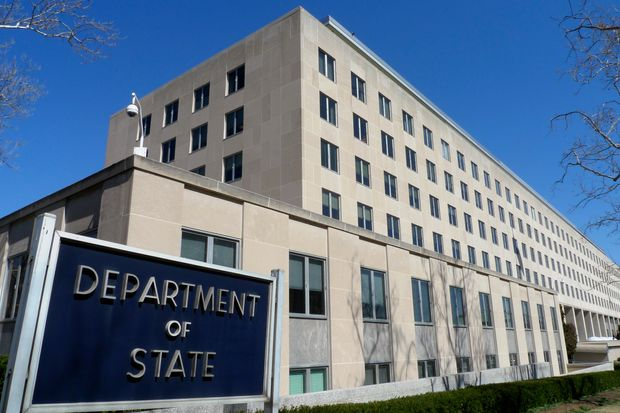 |
| 2021-05-31 16:53:00 | Opinion | The Open Skies Treaty Closes | Biden wisely changes his position on an accord Russia openly violated. | Much could go wrong when President Biden sits down with Vladimir Putin in Geneva on June 16. But at least one bad policy has been ruled out: The U.S. won’t try to revive the Open Skies Treaty. “In concluding its review of the treaty, the United States therefore does not intend to seek to rejoin it, given Russia’s failure to take any actions to return to compliance,” a State Department statement said last week. “Further, Russia’s behavior, including its recent actions with respect to Ukraine, is not that of a partner committed to confidence-building.” The 1992 accord—which allowed the U.S., Russia and European states to conduct surveillance flights over each other—is a relic of the optimism that accompanied the downfall of the Soviet Union. The treaty was theoretically useful in creating military transparency. But these kinds of agreements only work when the parties operate in good faith. Despite some post-Cold War hope, Russia never transformed into a responsible international player. It blocked legitimate Western flights over its territory while using the treaty to gain intelligence about American sites. Even if Mr. Putin fully complied, the treaty still tilted in his favor: American surveillance technology outpaces Russian abilities, making the flights more useful to Moscow than Washington. When Donald Trump announced he would leave the treaty in May 2020, Mr. Biden called the decision a “short-sighted policy of going it alone and abandoning American leadership.” He warned this would “increase the risks of miscalculation and conflict” while alienating Europeans who wanted the U.S. to stay. |
 |
| 2021-05-31 16:48:00 | Opinion | A Golden Age for Genocide | It isn’t awareness the West lacks but a clear strategy to reverse the rising, bloody tide. | It’s been a big week for genocide apologies. On Friday, German Foreign Minister Heiko Maas asked Namibia and the descendants of its Herero and Nama peoples to forgive Germany for actions that “from today’s perspective” were a “genocide.” After bloodily crushing a revolt against colonial rule, in the 1900s German authorities confined Herero and Nama in concentration camps, where a majority of inmates are believed to have died of starvation and illness. In many cases, the tribal land Germany confiscated—the taking of which triggered the rebellion—is still held by settlers’ descendants today. Berlin’s apology came with a pledge of €1.1 billion (around $1.3 billion) for development and reconstruction projects over the next 30 years as recompense. Meanwhile in Rwanda Thursday, French President Emmanuel Macron acknowledged France’s “terrible responsibility” in the 1994 genocide, but without offering a formal apology or financial compensation. French forces played no direct role in the attacks that killed hundreds of thousands of Rwandans, but as Mr. Macron acknowledged, they supported the “genocidal regime” that carried out the murders. A French inquiry acknowledged in March what had been well-known to observers for decades: “French officials armed, advised, trained, equipped, and protected” the Rwandan government that prepared and carried out one of the most horrific actions by any non-Communist government since World War II. The apologizers, as usual, seem less enthusiastic at their tasks than the genocidaires were in theirs. A representative of the Herero people denounced the German apology and compensation offer as “a total insult to our intelligence” and vowed to “fight to hell and back” against closing the books on the German colonial atrocities. The leading Rwandan genocide survivor group expressed disappointment that Macron didn’t offer “a clear apology.” The problem for apologetic states in part is a legal one. Germans don’t want to set a precedent in Namibia that would strengthen the case of, for example, Greeks who demand close to €300 billion as compensation for Nazi crimes in World War II. Similar concerns have dogged Japan’s efforts to resolve the issue of crimes against Koreans during the era of colonial rule, which ended in 1945. Apologies carefully vetted by lawyers rarely sound truly heartfelt. But if genocide apologizers are having an active year, genocidaires are even busier. Walking through my neighborhood in Washington earlier this spring I saw a crowd of people shouting “Stop the Genocide!” and it took me a few minutes to figure which contemporary atrocity they had in mind. |
|
| 2021-05-31 16:47:00 | Opinion | NYPD Can’t Fight Crime on Its Own | Officers need support from social workers, counselors, teachers and the community. | New York Nearly 30 people were shot in New York City on a single weekend in May. Citywide, shootings are up approximately 80% since the beginning of the year, and murders have increased more than 20%. It is naive to think we can make the city safer by removing resources from the New York Police City Department. But it’s also true we can’t continue the current approach to fighting crime. Increasing police presence in high-crime areas is a critical component of responding to the violence affecting our city, but it is not a complete solution. We must confront this crime wave with specialized policing while also addressing the underlying social inequalities. Some of my opponents in the race for mayor suggest a return to blunt-force tactics, such as stop-and-frisk, that perpetuated racial discrimination and stereotypes. In 2011, the peak of stop-and-frisk, police made 685,724 stops. Of those stopped, 87% were black or Latino, and 88% were innocent, according to an analysis of NYPD data from the New York Civil Liberties Union. The police are supposed to protect communities, not profile them. Instead, the NYPD’s acute intelligence and investigative capabilities, which have resulted in record gun arrests—a 64% increase in February compared with the same time last year—should continue in communities facing runaway gun violence. We must also disrupt the influx of illegal guns and embed specially trained officers in the highest-crime areas to take on criminal networks. |
|
| 2021-05-31 16:46:00 | Books | ‘Evolution Gone Wrong’ Review: Our Fallible Bodies | A series of evolutionary ‘trade offs’ means that even healthy bodies operate at the edge of acceptable performance, predictably prone to fail. | In Voltaire’s “Candide,” the protagonist’s servant asks his master to explain the meaning of optimism. To which his master replies: “It is the mania for insisting that all is well when all is by no means well.” There is perhaps no more perfect description of the human condition, as all is manifestly not well. How could it be? From the moment of our inception, a silent biological clock begins the countdown to the end of our existence. Our genome contrives to mutate itself into a smorgasbord of potential pathologies, each capable of corrupting and unraveling us. We respond with attempts to medicate and therapize ourselves, to correct the built-in flaws and shining imperfections that make us so irresistibly human. In Alex Bezzerides’s entertaining “Evolution Gone Wrong: The Curious Reasons Why Our Bodies Work (or Don’t),” the author’s quest is to determine the origins of the “aches and pains of the masses and why they happen”—not the mechanical causes of our maladies but the evolutionary ones. The explanation, Mr. Bezzerides concludes, may be found in our anatomical shortcomings—“trade-offs” made during our continuing evolutionary history. The result is that even healthy bodies operate at the edge of acceptable performance, while also being prone to fail in predictable ways. The catalog of human fallibilities that Mr. Bezzerides assembles begins with an account of our suboptimal dentition. For many individuals, the textbook display of 32 neatly arrayed teeth, systematically configured to produce a perfect Hollywood smile, is at best hopeful and more frequently fictional. Reality more typically involves a procession of braces, extractions and eccentric protrusions. So why don’t our teeth fit into our mouths? The answer, according to Mr. Bezzerides, is that four million years ago our ancestors transitioned from a fruit- and leaves-based diet to one of grasses and sedges. Their molars ballooned out to gargantuan proportions, which was not at first problematic, since their substantive jaws readily accommodated the newly enlarged teeth. But as humans controlled fire, learned to cook, became cooperative, and developed hunting techniques and an accompanying armamentarium of cutting implements, the requirement for robust dentition diminished. We were nevertheless stuck with the legacy of “a mouth full of large teeth.” Jaw and tooth size subsequently began to decrease, yet the distinct genetic programs controlling each led to a disconnect between their relative rates of reduction. While the human jaw enthusiastically embraced its “great shrink,” tooth-size reduction struggled to keep up. Hence the modern tooth-jaw mismatch. Our imperfectly functioning eyes suffer similarly from constraints imposed by our distant evolutionary history. More than half of European adults have visual defects, while a quarter of U.S. children require visual correction. The problem, according to Mr. Bezzerides, is that the eyes of our vertebrate ancestors evolved to function underwater. When vertebrates first moved onto land 375 million years ago, their eyes had already existed for more than 100 million years. The reconfiguration of such established biological hardware was not trivial, leaving us with short-sightedness and a range of oddities, including the need to blink up to 14,000 times a day while deploying a Coke can full of lubricating tears. |
|
| 2021-05-31 16:25:00 | Politics | Biden Calls for Defense of Democracy in U.S. and World on Memorial Day | President’s remarks come after he called Republican-backed voting restrictions in Texas and other states ‘an assault on democracy’ | WASHINGTON—President Biden honored American military service members who died in the line of duty, using a Memorial Day address to call for a defense of democracy in the U.S. and around the globe. “Democracy must be defended at all costs. For democracy makes this all possible,” Mr. Biden said Monday at an amphitheater in Arlington National Cemetery. “Democracy. That’s the soul of America. And I believe it’s a soul worth fighting for, and so do you, a soul worth dying for.” Mr. Biden’s comments followed remarks he made earlier in the weekend, when he called voting measures in Texas, Florida and Georgia “an assault on democracy.” Republican-backed bills with voting restrictions in several states have become a battleground between the GOP and Democrats recently. Texas Democrats walked out of the state House on Sunday to impede passage of a measure with voting restrictions. Republicans say the laws protect election security and prevent fraud while Democrats say they restrict access to polls, including among minorities. |
|
| 2021-05-31 16:10:00 | World | Brazil’s Experiment to Vaccinate Town With Chinese CoronaVac Reduced Covid-19 Deaths by 95% | Town’s symptomatic cases fell 80%, hospitalizations dropped 86%, researchers say | SÃO PAULO—Brazil’s experiment to vaccinate an entire town with the Chinese CoronaVac shot reduced Covid-19 deaths by 95%, providing more evidence of the efficacy of the vaccine being rolled out across much of the developing world. All adults in Serrana, a town of 45,000 people in southeastern Brazil, were offered CoronaVac between February and April as part of the “Project S” experiment, the first mass trial of its kind against Covid-19. The Butantan Institute, the São Paulo-based public-research center that organized the study with Chinese firm Sinovac, said Monday that cases and deaths from the disease had plunged in Serrana, even as neighboring regions struggled with rising infections. Deaths from the disease fell 95% in Serrana between the beginning of February and mid-May, according to Butantan’s presentation of the final results. The number of symptomatic cases fell 80%, and hospitalizations related to the disease dropped 86%, the study’s researchers said. Butantan said the mass vaccination campaign had curbed transmission of the disease in the town, also reducing cases and deaths among those who weren’t vaccinated, including minors under 18 and adults with serious health problems who couldn’t take the shot. More than 95% of the town’s eligible adults agreed to take CoronaVac as part of the experiment. |
|
| 2021-05-31 14:27:00 | Life & Arts | Naomi Osaka Withdraws From French Open Amid Debate Over News Conferences | The world no. 2 had chosen not to face the media in Paris, citing mental health | PARIS—Women’s tennis world No. 2 Naomi Osaka withdrew from the French Open on Monday, dramatically concluding a standoff over her decision not to grant interviews during the tournament, which she had attributed to caring for her mental health. Osaka, the highest-earning female athlete in the world and a winner of four major titles, had touched off the debate over the weekend and is now leaving Paris before even playing the second round. In her exit, she revealed a long-running struggle with depression and cast doubt on the rest of her season. Osaka had already been fined $15,000 by the Roland-Garros organizers for failing to appear in a mandatory news conference after her first-round victory here on Sunday. (She still answered three questions on the court and honored a long-standing agreement with a Japanese broadcaster.) “I never wanted to be a distraction and I accept that my timing was not ideal and my message could have been clearer,” she wrote in a statement posted to her social media accounts. “More importantly I would never trivialize mental health or use the term lightly. The truth is that I have suffered long bouts of depression since the U.S. Open in 2018 and I have had a really hard time coping with that.” Osaka, who was raised primarily in the U.S. and represents Japan, had stunned the French Open shortly after landing in Paris when she informed organizers that she would not be carrying out her media duties during the tournament, because she “often felt that people have no regard for athletes’ mental health.” |
|
| 2021-05-31 14:00:00 | Life & Arts | The Pandemic Made Kids’ Eyesight Worse, Doctors Say | Eye doctors say they’re seeing more children with new or worsening vision problems. Increased screen time, they believe, bears part of the blame. | Many kids are emerging from the pandemic with vision problems, doctors say. A primary culprit, they believe, is increased screen time. Eye doctors say they are seeing more children—many of whom were in virtual school—with new and worsening prescriptions for myopia, or near-sightedness. Rates of myopia in children were already increasing globally before the pandemic, but some research suggests the past year has exacerbated the problem. Doctors also report more cases of digital eye strain in kids. A leading theory behind rising myopia rates posits that when children look at screens or books for prolonged periods, the eye adjusts to accommodate a close focus, which may change and elongate the shape of the eye, leading to myopia. Likewise, decreased outdoor time may increase and worsen myopia, as people tend to look farther away when they’re outside. Natural light and physical activity outside may also play a role. (Adults don’t tend to experience significant worsening of myopia because eye growth generally stabilizes after childhood.) “We know that focusing up close and not being outside has increased the rate of myopia,” says Julia A. Haller, the ophthalmologist-in-chief at Wills Eye Hospital in Philadelphia. “There’s been a huge impact from the pandemic,” she says. In a January study in the journal JAMA Ophthalmology, researchers in China looked at myopia rates in more than 120,000 homebound children during the pandemic and found the prevalence in children ages 6 to 8 increased up to three times compared with the previous five years. |
 |
| 2021-05-31 13:49:00 | Business | ‘A Quiet Place’ Sequel Reboots Summer Moviegoing | The thriller and Disney’s ‘Cruella’ helped fuel a robust Memorial Day weekend at the box office, though far below pre-Covid-19 levels | Compared with last year, how much better was the kickoff to this year’s summer season at the movies? More than a hundred times better. Led by the long-delayed and much-anticipated horror sequel “A Quiet Place Part II,” the combined North American box office raked in at least $97 million, according to media measurement firm Comscore. “A Quiet Place Part II” captured the bulk of that, grossing $57 million in the U.S. and Canada during the Memorial Day holiday weekend, according to preliminary studio estimates. Last year, this weekend—typically the start of a busy summer full of Hollywood blockbusters—saw box-office revenues plummet to $843,000, according to Comscore. The Covid-19 pandemic meant most theaters were closed and people were sheltered at home watching shows and movies on their televisions and devices. While the weekend’s total represents a significant rebound, domestic ticket sales for all movies during the Memorial Day holiday pre-Covid have tended to surpass $200 million. Still, with the highest-grossing weekend in more than a year, “A Quiet Place Part II” did what avid moviegoers and Hollywood power players hoped it would: demonstrate that moviegoing—a business which has survived past existential threats like the advent of television and then home video—remains a resilient industry despite consumers’ increased adoption of streaming services. Distributed by ViacomCBS Inc.’s Paramount Pictures movie studio, “A Quiet Place Part II” picks up where the original, 2018 breakout box-office hit left off, following members of a small family as they navigate a post-apocalyptic world where survivors seek shelter from deadly monsters that have a keen sense of hearing. Actors Emily Blunt and John Krasinski both reprise their roles. Mr. Krasinski, who has surprised fans at some early screenings to drum up interest in the film, also wrote, directed and produced the movie. |
|
| 2021-05-31 13:07:00 | World | Naftali Bennett Poised to Dislodge His Mentor to Become Israel’s Next Prime Minister | Participants in the prospective government say they are willing to set aside grand policy gestures if it means avoiding more political gridlock | TEL AVIV—Naftali Bennett, a standard-bearer for Israel’s right-wing, was locked in negotiations on Monday with politicians across Israel’s ideological spectrum united in their goal of dislodging from power the country’s longest-serving prime minister, Benjamin Netanyahu. The 49-year old former Israeli commando is working with centrist politician Yair Lapid to meet a Wednesday midnight deadline to agree on a coalition that would govern Israel through one of the most tumultuous periods of the country’s history. The disparate parties have aligned mainly to oust Mr. Netanyahu and to avoid another election—the fifth in just over two years. “There are still plenty of obstacles in the way of the formation of the new government. Maybe that’s a good thing because we’ll have to overcome them together,” said Mr. Lapid Monday of the coalition talks. “In a week the state of Israel can be in a new era.” Under the emerging terms of a deal, Mr. Bennett will serve first as prime minister for two years and then Mr. Lapid will succeed him. The other parties that are expected to be part of the government are left-wing Labor and Meretz, centrist Blue and White and right-wing Yisrael Beiteinu and New Hope as well as Mr. Lapid’s centrist Yesh Atid and Mr. Bennett’s right-wing Yamina. Israel’s Islamist party Raam is expected to back the coalition from the outside. Mr. Lapid received the mandate to form the government earlier this month after Mr. Netanyahu failed. He has until Wednesday to tell Israel’s President Reuven Rivlin he is forming a government. Once he does that, the new government must be sworn in within a week, with the support of a majority of the Knesset. |
|
| 2021-05-31 11:59:00 | Life & Arts | Japan Faces Olympic Losses No Matter How It Handles the Games | Country has already lost out on foreign tourists’ spending, and opening to local spectators risks a costly Covid-19 surge | TOKYO—The first group of foreign athletes was set to arrive for the Tokyo Olympics, raising the stakes for Japan’s prime minister as he comes under renewed pressure to seek a cancellation of the Games rather than risk a crippling new wave of the pandemic. Australia’s softball team was scheduled to land in Japan on Tuesday and spend the weeks up to the July 23 start of the Games isolated on three floors of a hotel north of Tokyo, heading out only for training and interacting with locals only via video calls. The arrival of athletes puts more pressure on Prime Minister Yoshihide Suga, who faces an array of medical, political and business leaders calling for the Games to be reconsidered while international Olympics officials say they intend to stick to the schedule. A new poll by the Nikkei newspaper showed 63% of the public remain opposed to the Olympics going ahead as fears grow about the spread of Covid-19 variants, particularly the virulent strain first discovered in India. Most Japanese aren’t expected to be vaccinated when the Games start. Polling shows public opinion opposed to the Games in South Korea and some other nations, amid fears the event could accelerate the spread of infection outside Japan as athletes and officials return home from the event. Some doctors pulled out of the New Zealand Olympic team because of Covid-19 concerns. |
|
| 2021-05-31 11:51:00 | Life & Arts | Genetically Altered Mosquitoes Target Deadly Dengue Fever and Zika | In pioneering test, insects with a gene primed to interrupt breeding are flying in the Florida Keys | Across the Florida Keys this week, newly hatched mosquitoes are swarming from damp flowerpots, waterlogged spare tires, trash cans and drainage ditches. In six neighborhoods, however, a change is buzzing in the air. Scientists have genetically modified thousands of these mosquitoes and, for the first time in the U.S., set them free to breed. These genetically engineered insects, known by their model number as OX5034, are a laboratory offshoot of the Aedes aegypti mosquito that transmits dengue, Zika and other infectious ills. After a decade of public debate and regulatory delays, these insects are being released by a U.K. biotechnology company called Oxitec. Using genetic-engineering techniques, the company altered the male mosquitoes to pass down a gene that makes females need a dash of the antibiotic tetracycline to survive. Without it, females that spread the disease die as larvae. Altered males, which don’t bite, seek out wild females to mate and spread the lethal trait to future generations. Gradually, more females die. The swarms dwindle and disappear, with no need for chemical insecticides. The Florida Keys field trial is a key step toward federal product approval for the altered insects from the U.S. Environmental Protection Agency, which granted the company an experimental use permit for the test. “This is a big deal,” says molecular biologist Anthony James at the University of California, Irvine, who develops bioengineered mosquitoes but is not involved in the project. |
|
| 2021-05-31 11:51:00 | Opinion | Kamala Harris Bombs at the Naval Academy | Hers was one of the worst 2021 commencement speeches. Mitch Daniels’s might have been the best. | Have you heard the one about the Marine with the rolled-up solar panel? It wasn’t exactly Bob Hope and the USO when Kamala Harris attempted humor during a commencement address to graduating sailors and Marines at the Naval Academy last week. Addressing the next generation of America’s warriors, the vice president cracked a quip about how they’d just love all that green investment she and Joe Biden are planning: “Just ask any Marine today, would she rather carry 20 pounds of batteries or a rolled-up solar panel, and I am positive she will tell you a solar panel—and so would he.” Ms. Harris’s attempt at gender-inclusive, environment-friendly comedy elicited an appreciative and raucous peal of laughter—but only from her. The rest of the audience looked like they wanted to crawl under the nearest solar panel. To be fair, It’s not easy to make culturally compliant humor. The best humor is often countercultural, even downright offensive. You can’t be woke and funny. Picture the scene: a roomful of the vice president’s finest young staffers all wielding their critical-theory degrees from Sarah Lawrence and Amherst, brainstorming lines for an unfamiliar audience of brave young fighters. |
|
| 2021-05-31 11:36:00 | World | Gunmen in Nigeria Kidnap More Than 100 Schoolchildren Amid Abduction Epidemic | Fear of kidnapping closes campuses in Africa’s most populous nation, leaving millions out of school; ‘This has become our new normal’ | Gunmen kidnapped more than 100 students from an Islamic school in Nigeria on Sunday, local officials said, the latest in a rising tide of high-school abductions across Africa’s most populous nation, where kidnapping schoolchildren for ransom has become a lucrative industry. Authorities in Niger state confirmed that armed men traveling on around 70 motorcycles arrived at the Salihu Tanko School in the town of Tegina Sunday afternoon and began shooting, before forcing the students to walk toward the forest at gunpoint. At least one person was killed, the officials said. One teacher estimated that 150 students were missing, while other reports put the figure at closer to 200. Later on Sunday, 11 children between 4 and 6 years old were recovered by authorities and said the gunmen released them because they were unable to keep walking and were slowing the convoy down. “We were driving towards the school at the time of the kidnap but had to turn back because there was too much gunfire…We thought we’d get shot,” said Mohammed Idris, an eyewitness from Tegina. Local officials said on Monday they were driving from house to house to try to ascertain the number of missing. The kidnap-for-ransom business is booming across northern Nigeria, and schoolchildren are its hottest commodity. |
 |
| 2021-05-31 11:35:00 | Life & Arts | The Avalanche’s Nathan MacKinnon Is the Biggest Bargain in the NHL | The star forward’s contract has allowed Colorado’s front office to build a deep bench around him for this year’s Stanley Cup run | In the opening rounds of the NHL playoffs, the hottest player on the hottest team has been Colorado’s Nathan MacKinnon. Already one of the league’s top scorers over the last four seasons, the 24-year-old center has taken his game to another level in May and is racking up points at the most efficient clip of any skater in the 2021 postseason. MacKinnon was key to Colorado’s opening round sweep of the St. Louis Blues and added another three points in Sunday’s 7-1 blowout of Las Vegas in Game 1 of the West Division final. But it’s not just his scoring prowess that is propelling the Avalanche. He is also helping Colorado challenge for its first championship since 2001 with his contract. As the 79th highest-paid player in 2021, MacKinnon is the biggest bargain in professional hockey, allowing Colorado’s front office to build a deep bench around him for this year’s Cup run. How it happened is partly a reflection of the NHL’s changing labor market dynamics and partly luck. MacKinnon was the top pick in the 2013 NHL draft at 17 years old, won the Calder Trophy, awarded to the NHL’s rookie of the year, in 2013-14 and showed flashes of brilliance in subsequent seasons. As a sophomore he netted 38 points in 64 games and added 52 more in 72 contests heading into his contract year. |
|
| 2021-05-31 11:16:00 | Opinion | Free Otero Alcántara | The 33-year-old Cuban artist and regime critic has been held incommunicado in a hospital since May 2. | It’s impossible to know if Luis Manuel Otero Alcántara has become yet another victim of psychiatric torture by the Cuban military dictatorship. But it sure looks that way. The 33-year-old artist has been held incommunicado at Havana’s Calixto Garcia Hospital since May 2. A short, edited video of Mr. Otero Alcántara, released by regime surrogates via social media on May 20, has alarmed friends, supporters and the human-rights community. Amnesty International has declared him a prisoner of conscience. On Wednesday the New York Review of Books ran an open letter from more than 30 artists and writers across the globe demanding his release. Don’t bet on it. This poor Afro-Cuban, armed only with his courage, intellect and creativity, is an existential threat to Cuba’s ruling elite. Mr. Otero Alcántara is a founder of the San Isidro Movement, a collection of Cuban artists, writers, musicians, students and researchers formed in 2018 to oppose regime censorship. He was on a hunger strike to protest state confiscation of his artwork when police carted him off. They wanted to put an end to the public spectacle of his deteriorating physical condition. The dictatorship also may have thought that by “hospitalizing” Mr. Otero Alcántara it would gag the movement—and maybe even get rid of him. (He’s in the same hospital where Ladies in White leader Laura Pollán died in 2011 at the height of her effectiveness as a regime critic.) But rising international criticism suggests the strategy could backfire. |
|
| 2021-05-31 11:16:00 | Opinion | Male Inmates in Women’s Prisons | If Congress passes the Equality Act, California’s dangerous policy would go nationwide. | Torrance, Calif. Crazy California laws occasionally go national. Take SB 132, which took effect in January. It allows transgender-identified male state prison inmates to transfer into women’s prisons based on “individual preference”—no hormones, surgery or time spent living as the opposite sex required. Spokeswoman Terry Thornton of the California Department of Corrections and Rehabilitation says 264 male prisoners have declared a nonmale identity and formally requested transfer to women’s facilities. If Congress passes the Equality Act—the House already has—incarcerated biological men who identify as female would be entitled to transfer into women’s federal prisons and possibly also state prisons nationwide. How’s that working in California? Not well, according to Amie Ichikawa, who was released in 2013 from the Central California Women’s Facility in Chowchilla, where she served five years for assault and kidnapping. Ms. Ichikawa is now forming a nonprofit to help currently incarcerated women. I visited her home in Torrance, and she put me in touch with four other current and former inmates. She contacted me after I appeared at a March Senate Judiciary Committee hearing to testify against the Equality Act. I told the lawmakers that although the vast majority of transgender Americans are peaceful, decent and law-abiding, the overbroad bill would be subject to abuse by opportunistic male felons. None of the currently and formerly incarcerated women I spoke to expressed any animus toward transgender people. All acknowledged that some biological men who are transgender have been subject to abuse in men’s prisons. Several of the women made a point of saying they’d have no problem sharing a cell with natal males who have undergone sex-reassignment surgery. |
|
| 2021-05-31 11:11:00 | Opinion | Harvard and Discrimination Against Asians | Expect opaque and unmeasurable admissions criteria to replace objective and rigorous standardized testing. | Regarding your editorial “Justices, Please Take the Harvard Case” (May 25): Be careful what you wish for. If the plaintiffs, Students for Fair Admissions, win, you can bet that elite college- and graduate-admissions offices around the country will establish workarounds to assure that opportunities remain for admittance of significant numbers of underrepresented minorities. And they’d be right to do so. Expect opaque and unmeasurable admissions criteria to replace objective and rigorous standardized testing such as the SAT and ACT. These tests have their warts, no doubt, but they are more relevant than ever to help select the worthiest candidates, given vastly different educational experiences and rampant grade inflation. The tests have been shown to significantly predict first-year grades in universities at least as well for underrepresented minorities as for others. And recognizing the tests’ disparate socio-economic impact, admissions offices by and large have done an admirable job of using the tests flexibly and equitably, permitting more leeway for applicants from disadvantaged backgrounds. This approach has been a lifeline for minority students. Do we really want to jettison it? California, which has an anti-affirmative-action constitutional provision perpetually in the bull’s-eye of activists, has done just that. The UC Board of Regents voted last year to eliminate SAT/ACT requirements for new students. How the UC system will competently and fairly sift through the thousands and thousands of applicants—including making comparisons between minority candidates—in the absence of objective criteria like these tests is anyone’s guess. Let’s not repeat that fiasco in waiting nationally. The justices would be wise to take a pass on the Harvard case, or to affirm the lower courts’ decisions. William G. Lawlor |
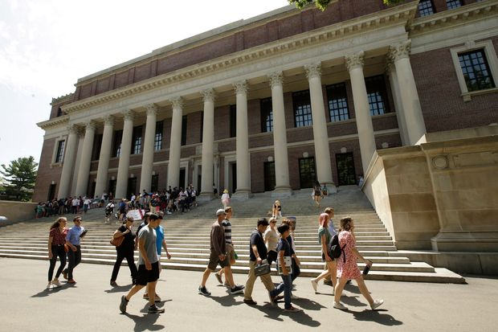 |
| 2021-05-31 11:10:00 | Opinion | Clean-Energy Materials From Dirty Places | The magnitude and velocity of demand for “clean-energy” minerals to meet the administration’s aspirations will necessarily come from imports because new mines in America couldn’t possibly be opened fast enough—even if that were the plan. | Regarding the May 21 letters responding to my May 12 op-ed “Biden’s Not-So-Clean Energy Transition”: One states I “paint with a broad brush” about mining hazards associated with supplying minerals needed for green-energy plans, claiming environmental and labor abuses that “may” exist in “some countries” (set aside it isn’t “may,” they’re widely documented) wouldn’t happen at American mines because of our regulations and standards. True, but irrelevant. The magnitude and velocity of demand for “clean-energy” minerals to meet the administration’s aspirations will necessarily come from imports because new mines in America couldn’t possibly be opened fast enough—even if that were the plan. The Biden plan doesn’t support any domestic mining to meet the gargantuan green-materials needs. It’s impossible to build green machines if someone else doesn’t dig. As for the International Energy Agency’s claim that my summary was “erroneous and incomplete,” they don’t dispute facts (I used their data), offering instead my failure to list their “six key” policy “actions” that would “ensure” the world will have enough minerals. Those “actions” are just aspirations, including: an “overarching international framework for dialogue and policy coordination among producers and consumers,” “stepping up R&D efforts,” the need to “explore a range of measures to improve the resilience of supply chains” and ensuring an “adequate investment in diversified sources of new supply.” The U.S. won’t be one of those sources. That IEA report observed that if miners “wait for deficits to emerge before committing to new projects, this could lead to a prolonged period of market tightness and price volatility.” Translation: high prices and supply shortages for consumers and importers of minerals, especially the U.S. Mark Mills Chevy Chase, Md. |
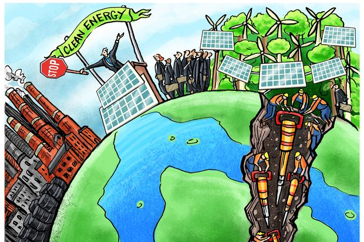 |
| 2021-05-31 11:07:00 | Opinion | U.S. Chip Industry Chipper, Subsidy a Waste | Subsidies are always suspect, but when showered on industries that are thriving, they are beyond doubt inexcusable. | Your editorial criticisms of industrial policy are spot on (“Industrial Policy, Same Old Politics,” May 26). Yet the absurdity of now throwing $54 billion of taxpayers’ money at an allegedly on-the-ropes U.S. semiconductor industry runs more deeply than you had space to mention. It’s true, as you note, that “American companies dominate in design (52%) and chip-making equipment (50%).” But the good news about this industry doesn’t stop there. Consider this recent summary, by the Cato Institute’s Scott Lincicome, of the healthy state of America’s semiconductor industry: “The United States is also a top-five global exporter of semiconductors and related equipment, shipping almost $47 billion of those goods in 2019. These and other data led the SIA [Semiconductor Industry of America] to conclude in its 2020 State of the U.S. Semiconductor Industry report that ‘the semiconductor manufacturing base in the United States remains on solid footing.’” “The SIA also reports that the U.S. industry has ‘nearly half’ of all global semiconductor sales—a market share that has been steady (ranging from the mid‐40s to low 50s) since the late 1990s—and is the top seller in every major regional market, including China. Sales by U.S. semiconductor firms also grew from $76.7 billion in 1999 to $192.8 billion in 2019—a compound annual growth rate of almost 5%.” “Beyond output and sales, the U.S. semiconductor industry has been a global leader in capital spending (capex) and R&D.” Subsidies are always suspect, but when showered on industries that are thriving, they are beyond doubt inexcusable. What further proof do we need to conclude that politicians cannot be trusted to allocate resources wisely? |
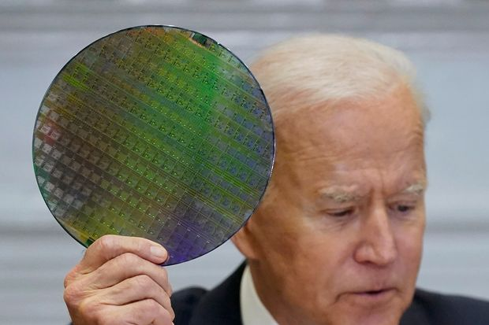 |
| 2021-05-31 10:34:00 | Life & Arts | The Hot New Advantage in Sports: Being Old | Helio Castroneves wins the Indianapolis 500, joining Tom Brady and Phil Mickelson in a sprightly run of late-career titles | What’s getting into our great sports geezers? In February, Tom Brady led the Tampa Bay Buccaneers to a Super Bowl title at age 43, his second championship in his 40s, and his seventh overall. The win also minted Tampa Bay head coach Bruce Arians as the oldest head coach to win a Super Bowl, at age 68. Then, last weekend, a fit, 50-year-old Phil Mickelson went out and pocketed the PGA Championship, outdueling golf’s thick-shouldered rocket-hitters to become the sport’s oldest major tournament winner. Finally, on Sunday, Helio Castroneves cannily passed 24-year-old Alex Palou with two laps to go to win the Indianapolis 500—at age 46. In victory, Castroneves cited Brady and Mickelson as inspirations. |
|
| 2021-05-31 10:34:00 | World | China’s New Three-Child Policy: What You Need to Know | Shift comes as Beijing struggles to reverse a worsening demographic situation | China no longer has a “one-child policy,” but it still keeps a lid on births. Beijing on Monday said it would allow all couples to have up to three children, another gradual lifting of its birth restrictions as the number of babies born continues to shrink and the population ages. Here is the background. In 1980, amid concerns the population was ballooning too quickly, China formally implemented a policy stipulating that most couples could only have one child. The policy was in place for more than three decades and was enforced by a massive family-planning bureaucracy. After some gradual loosening, Beijing said in late 2015 that it would allow all couples to have two children. This week, it increased the number to three Chinese leaders have credited the policy with reining in explosive population growth, helping to lift the country out of poverty and limit its carbon emissions. Some economists and demographers say the effect on birthrates may have happened anyway as China grew wealthier. The policy’s lasting legacy is a mind-set where one child is the norm. Many couples now feel that they can’t afford two children, let alone three. Beijing had projected that the move would lead to a sustained rise in births, but that hasn’t happened. In 2016, the first year of the two-child policy, births rose, but every year since has seen a drop. In 2020, there were around 12 million births, compared with 14.65 million the year before and 17.86 million in 2016. In recent years, there are signs that authorities in parts of China have looked the other way when couples have three children, but fines and other consequences can still be meted out for “violating birth policies.” The rules are more strictly implemented for public-sector workers, who can face dismissal if they have more than the allowed number of children. |